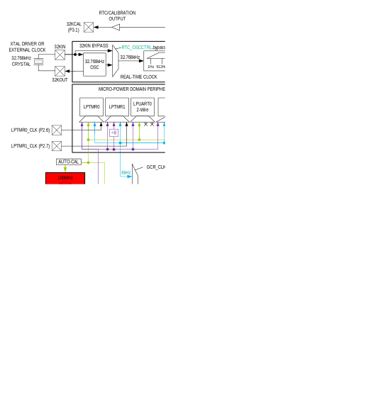
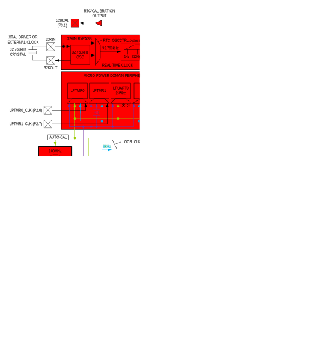

System, Power, Clocks, Reset
Different peripherals and subsystems use several clocks. These clocks are highly configurable by software, allowing developers to select the combination of application performance and power savings required for the target systems. Support for selectable core operating voltage is provided, enabling optimal timing access to the internal memories.
Oscillator Sources
100MHz Internal Primary Oscillator (IPO)
The MAX78000 includes a 100MHz internal high-speed oscillator, referred to in this document as the internal primary oscillator (IPO). The IPO is the highest frequency oscillator and draws the most power.
The IPO can optionally be powered down in LPM by setting the GCR_PM.ipo_pd field to 1.
The IPO can be selected as the SYS_OSC. Use the IPO as the SYS_OSC by performing the following steps:
- Enable the IPO by setting GCR_CLKCTRL.ipo_en to 1.
- Wait until the GCR_CLKCTRL.ipo_rdy field reads 1, indicating the IPO is operating.
- Set GCR_CLKCTRL.sysclk_sel to 4.
- Wait until the GCR_CLKCTRL.sysclk_rdy field reads 1. The IPO is now operating as the SYS_OSC.
60MHz Internal Secondary Oscillator (ISO)
The ISO is a low-power internal secondary oscillator that is the power-on reset default SYS_OSC. The ISO is automatically selected as SYS_OSC after a system reset or POR.
The following steps show how to enable the ISO and select it as the SYS_OSC.
- Enable the ISO by setting GCR_CLKCTRL.iso_en to 1.
- Wait until the GCR_CLKCTRL.iso_rdy field reads 1, indicating the ISO is operating.
- Set GCR_CLKCTRL.sysclk_sel to 0.
- Wait until the GCR_CLKCTRL.sysclk_rdy field reads 1. The ISO is now operating as the SYS_OSC.
8kHz-30kHz Internal Nano-Ring Oscillator (INRO)
The INRO is an ultra-low-power internal oscillator that can be selected as the SYS_OSC. The INRO is always enabled and cannot be disabled by software.
The frequency of this oscillator is configurable to 8kHz, 16kHz, or 30kHz. Use the TRIMSIR_INRO.lpclksel field to select the desired frequency. On a POR or system reset, the frequency defaults to 30kHz.
The following steps show how to set the INRO as the SYS_OSC.
- Verify the GCR_CLKCTRL.inro_rdy field reads 1.
- Set GCR_CLKCTRL.sysclk_sel to 3.
- Wait until the GCR_CLKCTRL.sysclk_rdy field reads 1. The INRO is now operating as the SYS_OSC.
7.3728MHz Internal Baud Rate Oscillator (IBRO)
The IBRO is a very low-power internal oscillator that can be selected as SYS_OSC. The INRO can optionally be used as a dedicated baud rate clock for the UARTs. The INRO is useful if the selected SYS_OSC does not accurately generate a desired UART baud rate.
The following steps show how to enable the IBRO and select it as the SYS_OSC.
- Wait until the GCR_CLKCTRL.ibro_rdy field reads 1, indicating the IBRO is operating.
- Set GCR_CLKCTRL.sysclk_sel to 5.
- Wait until the GCR_CLKCTRL.sysclk_rdy field reads 1. The IBRO is now operating as the SYS_OSC.
32.768kHz External Real-Time Clock Oscillator (ERTCO)
The ERTCO is an extremely low-power internal oscillator that can be selected as the SYS_OSC. The ERTCO can optionally use a 32.768kHz input clock or an 8kHz independent nano-ring oscillator instead of an external crystal. The internal 32.768kHz clock is available as an output on GPIO P3.1 as alternate function 1 (SQWOUT).
This oscillator is the default clock for the real-time clock (RTC). If the RTC is enabled, the ERTCO is enabled automatically, independent of the selection of the SYS_OSC. The ERTCO is disabled on a POR or system reset.
The following steps show how to enable the ERTCO and select it as the SYS_OSC.
- Enable the ERTCO by setting GCR_CLKCTRL.ertco_en to 1.
- Wait until the GCR_CLKCTRL.ertco_rdy field reads 1, indicating the ERTCO is operating.
- Set GCR_CLKCTRL.sysclk_sel to 6.
- Wait until the GCR_CLKCTRL.sysclk_rdy field reads 1. The ERTCO is now operating as the SYS_OSC.
System Oscillator (SYS_OSC)
The MAX78000 supports multiple clock sources as the SYS_OSC. The selected SYS_OSC is the clock source for most internal blocks. Each oscillator, description, and nominal frequency are shown in Table 4-1. An external clock source, EXT_CLK, is supported on P0.3, alternate function 1. Each of the oscillators/clocks is described in detail in section Oscillator Sources.
Table 4-1: Available System Oscillators
| Oscillator/Clock | Description | Nominal Frequency |
|---|---|---|
| IPO | Internal Primary Oscillator | 100MHz |
| ISO | Internal Secondary Oscillator | 60MHz |
| INRO | Internal Nano-Ring Oscillator | Configurable 8kHz, 16kHz, or 30kHz |
| IBRO | Internal Baud Rate Oscillator | 7.3728MHz |
| ERTCO | External Real-Time Clock Oscillator | 32.768kHz |
| EXT_CLK | External Clock | Up to 80MHz |
System Oscillator Selection
Set the system oscillator using the GCR_CLKCTRL.sysclk_sel field. Before selecting an oscillator as the system oscillator, the oscillator source must first be enabled and ready. See each oscillator source’s detailed description for the required steps to enable the oscillator and select it as the system oscillator.
When the GCR_CLKCTRL.sysclk_sel is modified, hardware clears the GCR_CLKCTRL.sysclk_rdy field, and there is a delay until the switchover is complete. When the switchover to the selected SYS_OSC is complete, the GCR_CLKCTRL.sysclk_rdy field is set to 1 by hardware. The application software must verify that the switchover is complete before continuing operation.
System Clock (SYS_CLK)
The selected SYS_OSC is the input to the system oscillator divider to generate the system clock (SYS_CLK). The system clock divider divides the selected SYS_OSC by the GCR_CLKCTRL.sysclk_div field, as shown in Equation 4-1.
Equation 4-1: System Clock Scaling
SYS_CLK = SYS_OSC / 2sysclk_div
GCR_CLKCTRL.sysclk_div is selectable from 0 to 7, resulting in divisors of 1, 2, 4, 8, 16, 32, 64 or 128.
SYS_CLK drives the Arm core, the RV32 core, and all AHB masters in the system. SYS_CLK generates the following internal clocks as shown below:
- AHB Clock
- HLCK = SYS_CLK
- APB Clock
- PCLK = SYS_CLK / 2
The RTC uses the ERTCO for its clock source. Optionally, the RTC can run using an internal dedicated 8kHz nano-ring oscillator. See the Real-Time Clock (RTC) chapter for details on using this 8kHz nano-ring oscillator for the RTC.
All oscillators are reset to their POR reset default state during: - Power-On Reset - System Reset
Oscillator settings are not reset during: - Soft Reset - Peripheral Reset
Table 4-2 shows each oscillator’s enabled state for each type of reset source in the MAX78000.
Note: A Watchdog Timer Reset performs a System Reset.
Table 4-2: Reset Sources and Effect on Oscillator and System Clock
| Reset Source | ||||
|---|---|---|---|---|
| Oscillator | POR | System | Soft | Peripheral |
| IPO | Disabled | Disabled | Retains State | Retains State |
| ISO | Enabled | Enabled | Retains State | Retains State |
| IBRO | Enabled | Enabled | Enabled | Enabled |
| INRO | Enabled | Enabled | Enabled | Enabled |
| ERTCO | Disabled | Disabled | Retains State | Retains State |
| System Clock (SYS_OSC) Source |
ISO | ISO | Retains State | Retains State |
Figure 4-1: MAX78000 Clock Block Diagram shows a high-level diagram of the MAX78000 clock tree.
Figure 4-1: MAX78000 Clock Block Diagram

Operating Modes
The MAX78000 includes multiple operating modes and the ability to fine-tune power options to optimize performance and power. The system supports the following operating modes:
- ACTIVE
- SLEEP
- Low-Power Mode (LPM)
- Micro Power Mode (UPM)
- STANDBY
- BACKUP
- Power Down Mode (PDM)
ACTIVE Mode
In this mode, both the CM4 and the RV32 cores can execute software, and all digital and analog peripherals are available on demand. Dynamic clocking disables peripheral not in use, providing the optimal mix of high performance and low power consumption. The CM4 has access to all System RAM by default. The RV32 has access to sysram2 and sysram3 and can be optionally configured to have exclusive access to these RAMs. Additionally, sysram3 can be configured as a unified internal cache controller for the RV32 allowing simultaneous data access and code execution for the CM4 and RV32 from the internal flash memory.
Each of the peripherals can be individually enabled during active mode or powered down. The CNN and each of the four CNNx16_n Processor Arrays and their associated memories can be powered down or set to active mode.
Low-Power Modes
SLEEP
This mode consumes less power but wakes faster because the clocks can optionally be enabled. The device status is as follows:
- The CM4 (CPU0) is sleeping
- The RV32 (CPU1) is sleeping
- The CNN is optionally available for use
- Each of the four CNNx16_n quadrants is individually configurable for power down
- Standard DMA is available for use
- All peripherals are on unless explicitly disabled before entering SLEEP
Entering SLEEP
Entering SLEEP requires both the CM4 and RV32 to cooperate to enter SLEEP. Synchronization is necessary for deterministic entry into SLEEP. Two methods are described below, allowing either core to request entry into SLEEP. Both methods use the semaphore peripheral interrupt to communicate between the cores.
If the RV32 is driving entry to SLEEP, the RV32 notifies the CM4 of a request to enter SLEEP using Multiprocessor Communications. The CM4 receives the notification and then sends confirmation through the semaphore peripheral to the RV32. The CM4 should then enter SLEEP by setting the SCR.sleepdeep field to 0 and performing a WFI or WFE instruction. The RV32 should then enter SLEEP by performing a WFI instruction or by setting GCR_PM.mode to 1, followed by two NOP instructions.
Alternatively, the CM4 can initiate the request to enter SLEEP by sending the request to the RV32 using Multiprocessor Communications. The RV32 confirms the request through Multiprocessor Communications and performs a WFI instruction followed by two NOP instructions. The CM4 should then enter SLEEP by setting SCR.sleepdeep to 0 and performing a WFI or WFE instruction or by setting GCR_PM.mode to 1.
Figure 4-2: SLEEP Mode Clock Control

LPM
This mode is suitable for running the RV32 processor to collect and move data from enabled peripherals. The device status is a follows:
- The CM4, sysram0, and sysram1 are in state retention
- The CNN quadrants and memory are active and configurable.
- The RV32 can access the SPI, UARTS, Timers, I2C, 1-Wire, Timers, Pulse Train Engine, I2S, CRC, AES, TRNG, Comparators, as well as sysram2 and sysram3. Sysram3 can be configured to operate as the RV32 unified instruction cache
- The transition from LPM to ACTIVE is faster than the transition from BACKUP to ACTIVE because system initialization is not required
- The DMA is in state retention mode
- PWRSEQ_GP0 and PWRSEQ_GP1 registers retain state
- Choose the system PCLK or ISO as the clock source for the RV32 and all peripherals
- PWRSEQ_LPCN.lpmclksel defaults to use ISO during LPM. Setting this field to 1 uses the PCLK
- The following oscillators are powered down by default, but can be configured by software to remain active:
- ISO
- IPO
- ERTCO
- INRO
- The following oscillator is enabled:
- IBRO
Entering LPM
Entry into LPM should be managed between the two cores using Multiprocessor Communications to ensure both cores are in a known state when entering LPM.
When the CM4 puts itself into deep sleep, the device automatically enters LPM, and hardware sets the GCR_PM.mode to LPM. To place the CM4 in LPM mode in software, perform the following instructions.
If the RV32 requests the CM4 to enter LPM mode through Multiprocessor Communications and the CM4 enters SLEEP instead, by setting SCR.sleepdeep to 0 and performing a WFI or WFE instruction, the RV32 can put the device into LPM by directly setting the GCR_PM.mode field to LPM (8).
Note: The device immediately enters LPM when the GCR_PM.mode field is set to LPM. If the CM4 is not in a known state, issues may occur when exiting LPM.
Figure 4-3: LPM Clock and State Retention Diagram

UPM
This mode is used for extremely low power consumption while using a minimal set of peripherals to provide wake-up capability. The device status during UPM is:
- Both CM4 and RV32 are state retained.
- System state and all system RAM are retained
- CNN quadrants are optionally powered off
- CNN memory provides selectable retention
- The GPIO pins retain their state
- All non-UPM peripherals are state retained
- The following oscillators are powered down:
- IPO
- ISO
- The following oscillators are enabled:
- IBRO
- ERTCO, firmware configurable
- INRO, firmware configurable
- The following UPM peripherals are available for use to wake the device:
- LPUART0
- LPTMR0
- LPTMR1
- LPWDT0
- LPCOMP0-LPCOMP3
- GPIO
Entering UPM
Entering UPM mode requires both the CM4 and RV32 to cooperate to enter UPM mode. Synchronization is necessary for deterministic entry into UPM. Two methods are described below, allowing either core to request entry into UPM and ensuring deterministic entry. Both methods use the Semaphore peripheral interrupt to communicate between the cores.
If the RV32 is driving entry to UPM, the RV32 notifies the CM4 of a request to enter UPM using Multiprocessor Communications. The CM4 receives the notification and then sends a confirmation through the semaphore peripheral to the RV32. The CM4 should then enter SLEEP by setting SCR.sleepdeep to 0 and performing a WFI or WFE instruction. The RV32 sets the GCR_PM.mode to UPM, followed by two NOP instructions, and the device immediately enters UPM.
Alternatively, the CM4 can initiate the request to enter UPM by sending the request to the RV32 using Multiprocessor Communications. The RV32 confirms the request through Multiprocessor Communications and performs a WFI instruction, followed by two NOP instructions. The CM4 then sets the GCR_PM.mode to UPM, and the device immediately enters UPM.
Figure 4-4: UPM Clock and State Retention Block Diagram

STANDBY
This mode is used to maintain the system operation while keeping time with the RTC. The device status is as follows:
- Both CM4 and RV32 are state retained.
- System state and all system RAM is retained
- CNN quadrants are powered off
- CNN memory provides selectable retention (optional state retention)
- GPIO pins retain their state
- All peripherals retain state
- The following oscillators are powered down:
- IPO
- ISO
- IBRO
- The following oscillators are enabled:
- ERTCO, firmware configurable
- INRO
Entering STANDBY
Entering STANDBY requires both the CM4 and RV32 to enter STANDBY mode. Synchronization is necessary for deterministic entry into STANDBY. Two methods are described below, allowing either core to request entry into STANDBY and ensuring deterministic entry. Both methods use the semaphore peripheral interrupt to communicate between the cores.
If the RV32 is driving entry to STANDBY, the RV32 notifies the CM4 of a request to enter STANDBY using Multiprocessor Communications. The CM4 receives the notification and then sends a confirmation through the semaphore peripheral to the RV32. The CM4 should then enter SLEEP by setting SCR.sleepdeep to 0 and performing a WFI or WFE instruction. The RV32 sets the GCR_PM.mode to STANDBY, followed by two NOP instructions, and the device immediately enters into STANDBY.
Alternatively, the CM4 can initiate the request to enter STANDBY by sending the request to the RV32 using Multiprocessor Communications. The RV32 confirms the request through Multiprocessor Communications and performs a WFI instruction followed by two NOP instructions. The CM4 then sets the GCR_PM.mode to STANDBY, and the device immediately enters STANDBY.
Figure 4-5: STANDBY Mode Clock and State Retention Block Diagram

BACKUP
This mode is used to maintain the System RAM. The device status is as follows:
- CM4 and RV32 are powered off.
- Sysram0, sysram1, sysram2, and sysram3 can be independently configured for state retention, as shown in Table 4-3.
- User-configurable CNN memory retention
- All peripherals are powered off
- The following oscillators are powered down:
- IPO
- ISO
- IBRO
- INRO
- The following oscillators are enabled:
- ERTCO (The RTC peripheral can be turned off, but not the oscillator)
Table 4-3 System RAM Retention in BACKUP Mode
| RAM Block # | Size | State Retention Control |
|---|---|---|
| sysram0 | 32KB + ECC if enabled | PWRSEQ_LPCN.ramret0 |
| sysram1 | 32KB | PWRSEQ_LPCN.ramret1 |
| sysram2 | 48KB | PWRSEQ_LPCN.ramret2 |
| sysram3 | 16KB | PWRSEQ_LPCN.ramret3 |
Entering BACKUP
Entering BACKUP mode does not require synchronization between the RV32 and CM4 cores. However, it is recommended that Multiprocessor Communications are used to ensure both cores are aware of entry into BACKUP and complete any memory transactions before entry.
Either core can set GCR_PM.mode to BACKUP, and the device immediately enters BACKUP.
Figure 4-6: BACKUP Mode Clock and State Retention Block Diagram

PDM
This mode is used during product level distribution and storage. The device status is as follows:
- The CM4 and RV32 are powered off
- All peripherals and all RAMs are powered down
- All oscillators are powered down
- There is no data retention in this mode, but values in the flash are preserved
- VREGI POR voltage monitor is operational.
- Exit from PDM is possible through an external reset (RSTN) or a wake-up event using either P3.0 or P3.1 if configured.
Entering PDM
Entering PDM does not require synchronization between the RV32 and CM4 cores. However, it is recommended that Multiprocessor Communications is used to ensure both cores are aware of entry into PDM and complete any flash memory transactions.
Either core can set GCR_PM.mode to PDM, and the device immediately enters PDM.
Figure 4-7: PDM Clock and State Retention Block Diagram

Wake-Up Sources for Each Operating Mode
In all operating modes other than ACTIVE, wake-up sources are required to re-enter ACTIVE operation. Table 4-4 shows available wake-up sources for each operating mode of the MAX78000.
Note: Each wake-up source must be enabled individually except for External Reset, which is hardware controlled.
Table 4-4: Wake-Up Sources for Each Operating Mode in the MAX78000
| Operating Mode | Any Peripheral Interrupts | External Reset | RV32 | CNN | CNN FIFO | SPI1 | SPI0 | I2S | I2C2 | I2C1 | I2C0 | LPUART0 (UART3) | UART2 | UART1 | UART0 | LPTMR1 (TMR5) | LPTMR0 (TMR4) | TMR3 | TMR2 | TMR1 | TMR0 | LPWDT0 (WDT1) | WDT0 | LPCOMP3 | LPCMOP2 | LPCMOP1 | COMP0 | RTC | WUT | GPIO3 | GPIO2 | GPIO1 | GPIO0 |
|---|---|---|---|---|---|---|---|---|---|---|---|---|---|---|---|---|---|---|---|---|---|---|---|---|---|---|---|---|---|---|---|---|---|
| SLEEP | | | | | | | | | | | | | | | | | | | | | | | | | | | | | | | | | |
| LPM | | | | | | | | | | | | | | | | | | | | | | | | | | | | | | | |||
| UPM | | | | | | | | | | | | | | | | | | | | | |||||||||||||
| STANDBY | | | | | | | | | | | | ||||||||||||||||||||||
| BACKUP | | | | | | | | | | | | ||||||||||||||||||||||
| PDM | | | |||||||||||||||||||||||||||||||
| Note: The CNN and CNN FIFO cannot wake the CM4 from LPM. | |||||||||||||||||||||||||||||||||
Device Resets
Four device resets are available:
- Peripheral Reset
- Soft Reset
- System Reset
- Power-On Reset
On completion of any of the four reset cycles, all peripherals are reset. On completion of any reset cycle, HCLK and PCLK are operational, the CPU core receives clocks and power, and the device is in ACTIVE. Program execution begins at the reset vector address.
The contents of the always-on domain (AoD) are reset only on power-cycling VCOREA, VCOREB, VDDA, VDDIOH, or VREGI.
The on-chip peripherals can also be reset to their POR default state using the two reset registers, GCR_RST0 and GCR_RST1.
Table 4-5 shows the effects of each reset type on each of the operating modes.
Table 4-5: Reset and Low-Power Mode Effects
| Peripheral4 | Reset Soft4 | Reset System4 | Reset POR | ACTIVE | SLEEP | LPM | UPM | BACKUP3 | PDM | |
|---|---|---|---|---|---|---|---|---|---|---|
| IPO | - | - | Off | Off | R | - | FW | Off | Off | Off |
| ISO | - | - | On | Off | R | - | FW | Off | Off | Off |
| ERTCO | - | - | - | Off | FW | FW | FW | FW | FW | Off |
| IBRO | - | - | Off | Off | R | - | FW | FW | Off | Off |
| ERFO | - | - | Off | Off | R | - | Off | Off | Off | Off |
| INRO | On | On | On | On | On | On | On | On | On | Off |
| SYS_CLK | On | On | On2 | On2 | On | On | Off | Off | Off | Off |
| CPU Clock | On | On | On | On | On | Off | Off | Off | Off | Off |
| RTC | Reset | FW | FW | FW | FW | FW | Off | Off | ||
| WDT0, WDT1 | - | Reset | Reset | Reset | FW | Off | Off | Off | Off | Off |
| GPIO0-GPIO2 | - | Reset | Reset | Reset | R | - | - | - | - | - |
| GPIO3 | - | N/A | Reset | Reset | FW | FW | FW | FW | FW | FW |
| All Other Peripherals | Reset | Reset | Reset | Reset | R | - | R | R | Off | Off |
| Always-On Domain | - | - | - | Reset | - | - | - | - | - | - |
| RAM Retention | - | - | - | Reset | - | - | On | On | FW | Off |
|
Table key: FW = Controlled by firmware On = Enabled by hardware (Cannot be disabled) Off = Disabled by hardware (Cannot be enabled) - = No Effect R = Restored to previous ACTIVE setting when exiting LPM and UPM, restored to system reset state when exiting BACKUP or STORAGE. 1: The always-on domain (AoD) is only reset on power-cycling VCOREA, VCOREB, VDDA, VDDIOH, or VREGI. 2: On a system reset or POR, the ISO is automatically set as the SYS_OSC. 3: A system reset occurs when returning from BACKUP or PDM low-power mode. 4: Peripheral, soft, and system resets are initiated by software through the GCR_RST0 register. System reset can also be triggered by the RSTN device pin or a Watchdog reset. |
||||||||||
Peripheral Reset
Peripheral reset resets all peripherals. The CPU retains its state. The GPIO, watchdog timers, AoD, RAM retention, and general control registers (GCR), including the clock configuration, are unaffected.
To start a peripheral reset, set GCR_RST0.periph to 1. The reset is completed immediately upon setting GCR_RST0.periph to 1.
Soft Reset
A soft reset is the same as a peripheral reset except that it also resets the GPIO to its POR state.
To perform a soft reset, set GCR_RST0.soft to 1. The reset occurs immediately upon setting GCR_RST0.soft to 1.
System Reset
A system reset is the same as a soft reset, except it also resets all GCR, resetting the clocks to their POR default state. The CPU state is reset, as well as the watchdog timers. The AoD and RAM are unaffected.
A watchdog timer reset event initiates a system reset. To start a system reset, set GCR_RST0.sys to 1.
Power-On Reset
A POR resets everything in the device to its default state. A POR results from VCOREA, VCOREB, VDDA, or VREGI falling below their reset voltage level. Refer to the MAX78000 data sheet for details of the reset voltage levels.
Unified Internal Cache Controllers
The MAX78000 includes two unified internal cache controllers. ICC0 is the cache controller used for the CM4. ICC1, if enabled, is dedicated to the RV32 core. ICC1 uses sysram3 as the cache memory. If ICC1 is enabled, sysram3 is not accessible as SRAM (address range 0x2001 C000 to 0x2001 FFFF).
Both caches, ICC0 and ICC1, include a line buffer, tag RAM, and a 16KB 2-way set associative RAM when enabled.
Enabling the Internal Cache Controllers
Enabling ICC1 for use as the cache controller for the RV32 requires using sysram3 as the cache memory. Note: The contents of sysram3 are lost when ICC1 is enabled, and sysram3 is not accessible for data reads or writes as part of the memory map. Note: Before enabling ICC1 as a cache controller, sysram3 should be zeroized.
Perform the following steps to enable each ICC:
- Set the ICCn_CTRL.en to 0, ensuring the cache is invalidated when enabled.
- Set ICCn_CTRL.en to 1.
- Read ICCn_CTRL.rdy until it returns 1.
- Zeroize the ICC instance by setting GCR_MEMZ.icc0 or GCR_MEMZ.icc1 to 1.
Disabling the ICC
Disable an ICC instance by setting ICCn_CTRL.en to 0.
To use sysram3 as data RAM, first, disable the ICC1 instance as described above. When ICC1 is disabled, sysram3 is accessible as data RAM by both the CM4 and RV32 controllers unless sysram3 is configured for exclusive access by the RV32 core only.
Invalidating the ICC Cache and Tag RAM
Invalidate the contents of a specific ICC instance by setting the ICCn_INVALIDATE register to 1. Once invalidated, the system flushes the cache. Read the ICCn_CTRL.rdy field until it returns 1 to determine when the flush is completed.
Flushing the ICC
Flush ICC0 using the system configuration register (GCR_SYSCTRL). Set GCR_SYSCTRL.icc0_flush to 1 to immediately flush the contents of the 16KB cache and tag RAM.
Flush ICC1 using the RV32 Control Register (FCR_URVCTRL). Set FCR_URVCTRL.icc1_flush to 1 to immediately flush the contents of the 16KB cache and tag RAM.
Internal Cache Control Registers (ICC)
See Table 3-3 for the base address of this peripheral/module. See Table 1-1 for an explanation of the read and write access of each field. Unless specified otherwise, all fields are reset on a system reset, soft reset, POR, and the peripheral-specific resets.
Table 4-6: Instruction Cache Controller Register Summary
| Offset | Register | Name |
|---|---|---|
| [0x0000] | ICCn_INFO | Cache ID Register |
| [0x0004] | ICCn_SZ | Cache Memory Size Register |
| [0x0100] | ICCn_CTRL | Instruction Cache Control Register |
| [0x0700] | ICCn_INVALIDATE | Instruction Cache Controller Invalidate Register |
ICC0 Register Details
Table 4-7: ICC0 Cache Information Register
| ICC0 Cache Information | ICCn_INFO | [0x0000] | ||
| Bits | Name | Access | Reset | Description |
|---|---|---|---|---|
| 31:16 | - | RO | 0 | Reserved |
| 15:10 | id | R | - | Cache ID This field returns the ID for the cache instance. |
| 9:6 | partnum | R | - | Cache Part Number This field returns the part number indicator for the cache instance. |
| 5:0 | relnum | R | - | Cache Release Number
This field returns the release number for the cache instance. |
Table 4-8: ICC0 Memory Size Register
| ICC0 Memory Size | ICCn_SZ | [0x0004] | ||
| Bits | Name | Access | Reset | Description |
|---|---|---|---|---|
| 31:16 | mem | R | - | Addressable Memory Size This field indicates the size of addressable memory by the cache controller instance in 128KB units. |
| 15:0 | cch | R | - | Cache Size This field returns the size of the cache RAM in 1KB units.
16: 16KB Cache RAM
|
Table 4-9: ICC0 Cache Control Register
| ICC0 Cache Control | ICCn_CTRL | [0x0100] | ||
| Bits | Name | Access | Reset | Description |
|---|---|---|---|---|
| 31:17 | - | R/W | - | Reserved |
| 16 | rdy | R | - | Ready This field is cleared by hardware anytime the cache as a whole is invalidated (including a POR). Hardware automatically sets this field to 1 when the invalidate operation is complete, and the cache is ready.
0: Cache invalidation in process.
Note: While this field reads 0, the cache is bypassed, and reads come directly from the line fill buffer.
1: Cache is ready. |
| 15:1 | - | R/W | - | Reserved |
| 0 | en | R/W | 0 | Cache Enable Set this field to 1 to enable the cache. Setting this field to 0 invalidates the cache contents, and the line fill buffer handles all reads.
0: Disable
1: Enable |
Table 4-10: ICC0 Invalidate Register
| ICC0 Invalidate | ICCn_INVALIDATE | [0x0700] | ||
| Bits | Name | Access | Reset | Description |
|---|---|---|---|---|
| 31:0 | invalid | W | - | Invalidate Writing any value to this register invalidates the cache. |
RAM Memory Management
This device has many features for managing the on-chip RAM. The on-chip RAM includes the data RAM, the unified cache controllers (ICC0 and ICC1), the CNN RAM, and the peripheral FIFOs.
On-Chip Cache Management
The MAX78000 includes two unified internal cache controllers for code and data fetches from the flash memory. The caches can be enabled, disabled, zeroized, and flushed. See section Unified Internal Cache Controller for details.
RAM Zeroization
The GCR memory zeroize register, GCR_MEMZ, allows clearing memory for software or security reasons. Zeroization writes all zeros to the specified memory.
The following SRAM memories can be zeroized:
- Each of the System RAMs can be individually zeroized by setting the respective GCR_MEMZ bit:
- GCR_MEMZ.ram0
- GCR_MEMZ.ram0ecc
- GCR_MEMZ.ram1
- GCR_MEMZ.ram2
- GCR_MEMZ.ram3
- ICC0 16KB Cache
- GCR_MEMZ.icc0
- ICC1 16KB Cache, if enabled
- GCR_MEMZ.icc1
- Each of the CNNx16n processor arrays supports zeroizing the tornado RAM, mask RAM, bias RAM, and data SRAM:
- CNNx16_n_TEST.tramz set to 1 to zero, read CNNx16_n_TEST.tallzdone until 1 for completion
- CNNx16_n_TEST.mramz set to 1 to zero, read CNNx16_n_TEST.mallzdone until 1 for completion
- CNNx16_n_TEST.bramz set to 1 to zero, read CNNx16_n_TEST.ballzdone until 1 for completion
- CNNx16_n_TEST.sramz set to 1 to zero, read CNNx16_n_TEST.sallzdone until 1 for completion
Miscellaneous Control Registers (MCR)
See Table 3-3 for the base address of this peripheral/module. See Table 1-1 for an explanation of the read and write access of each field. Unless specified otherwise, all fields are reset on a system reset, soft reset, POR, and the peripheral-specific resets.
Table 4-11: Miscellaneous Control Register Summary
| Offset | Register Name | Access | Name |
|---|---|---|---|
| [0x0000] | MCR_ECCEN | R/W | Error Correction Coding Enable Register |
| [0x0004] | MCR_IPO_MTRIM | R/W | IPO Manual Trim Register |
| [0x0008] | MCR_OUTEN | R/W | Miscellaneous Output Enable Register |
| [0x000C] | MCR_CMP_CTRL | R/W | Comparator Control Register |
| [0x0010] | MCR_CTRL | R/W | Miscellaneous Control Register |
| [0x0020] | MCR_GPIO3_CTRL | R/W | GPIO3 Pin Control Register |
Miscellaneous Control Register Details
Table 4-12: Error Correction Coding Enable Register
| Error Correction Coding Enable | MCR_ECCEN | [0x0000] | ||
| Bits | Name | Access | Reset | Description |
|---|---|---|---|---|
| 31:1 | - | RO | 0 | Reserved |
| 0 | ram0 | R/W | 0 | System RAM 0 ECC Enable Set this field to 1 to enable ECC for sysram0.
0: Disabled
1: Enabled |
Table 4-13: IPO Manual Register
| IPO Manual Trim | MCR_IPO_MTRIM | [0x0004] | ||
| Bits | Name | Access | Reset | Description |
|---|---|---|---|---|
| 31:9 | - | R0 | 0 | Reserved |
| 8 | trim_range | R/W | 0 | Trim Range Select If this bit is set to 1, the value loaded into the MCR_IPO_MTRIM.mtrim field must be greater than the trim setting in the TRIMSIR_IPOLO.ipo_limitlo field. If this bit is set to 0, the value loaded into the MCR_IPO_MTRIM.mtrim field must be less than the trim setting in the TRIMSIR_CTRL.ipo_limithi field.
0: MCR_IPO_MTRIM.mtrim < TRIMSIR_IPOLO.ipo_limitlo
1: MCR_IPO_MTRIM.mtrim > TRIMSIR_CTRL.ipo_limithi |
| 7:0 | mtrim | R/W | 0x04 | Manual Trim Value Set this value to the desired manual trim based on the value set in MCR_IPO_MTRIM.trim_range. If MCR_IPO_MTRIM.trim_range is 0, the value in this field must be less than the value in TRIMSIR_IPOLO.ipo_limitlo. If MCR_IPO_MTRIM.trim_range is 1, the value in this field must be greater than the value in TRIMSIR_CTRL.ipo_limithi. |
Table 4-14: Output Enable Register
| Output Enable | MCR_OUTEN | [0x0008] | ||
| Bits | Name | Access | Reset | Description |
|---|---|---|---|---|
| 31:2 | - | RO | 0 | Reserved |
| 1 | pdown_out_en | R/W | 0 | Power Down Output Enable on P3.0 Set this field to 1 to enable the power down output, P3.0 AF1 (PDOWN). PDOWN is active in BACKUP and STANDBY.
0: PDOWN output not enabled on P3.0
1: PDOWN output is enabled on P3.0 |
| 0 | sqwout_en | R/W | 0 | Square Wave Output Enable on P3.1 (SQWOUT) Set this field to 1 to enable the square wave output on P3.1 AF1 (SQWOUT).
0: Square wave output not enabled on P3.1.
1: Square wave output enabled on P3.1. |
Table 4-15: Comparator 0 Control Register
| Comparator 0 Control | MCR_CMP_CTRL | [0x000C] | ||
| Bits | Name | Access | Reset | Description |
|---|---|---|---|---|
| 31:16 | - | RO | 0 | Reserved |
| 15 | if | R/W1C | 0 | Comparator 0 Interrupt Flag This field is set to 1 by hardware when the comparator output changes to the active state as set using the MCR_CMP_CTRL.pol field. Write 1 to clear this flag.
0: No interrupt
1: Interrupt occurred |
| 14 | out | RO | * | Comparator 0 Output This field is the comparator output state.
0: Output low
1: Output high |
| 13-7 | - | RO | * | Reserved |
| 6 | int_en | R/W | 0 | Comparator 0 Interrupt Enable Set this field to 1 to enable the interrupt for comparator 0.
0: Interrupt disabled
1: Interrupt enabled |
| 5 | pol | R/W | 0 | Comparator 0 Interrupt Polarity Select Set this field to select the polarity of the output change that generates a comparator 3 interrupt.
0: Interrupt occurs from a transition from low to high
1: Interrupt occurs from a transition from high to low |
| 4:1 | - | RO | 0 | Reserved |
| 0 | en | R/W | 0 | Comparator 0 Enable Set this field to 1 to enable the comparator.
0: Comparator disabled
1: Comparator enable |
Table 4-16: Miscellaneous Control Register
| Miscellaneous Control | MCR_CTRL | [0x0010] | ||
| Bits | Name | Access | Reset | Description |
|---|---|---|---|---|
| 31:10 | - | RO | 0 | Reserved |
| 9 | simo_rstd | R/W | 0 | SIMO System Reset Disable If this field is set, the SIMO is only reset by a POR. When this bit is set, the VSET* stays unchanged when exiting all low-power modes.
0: The SIMO is reset by all system resets.
1: The SIMO is only reset by a Power-On Reset. |
| 9 | simo_rstd | R/W | 0 | SIMO System Reset Disable If this field is set, the SIMO is only reset by a POR. When this bit is set, the VSET* stays unchanged when exiting all low-power modes.
0: The SIMO is reset by all system resets.
1: The SIMO is only reset by a Power-On Reset. |
| 8 | simo_clkscl_en | R/W | 0 | SIMO Clock Scaling Enable Set this field to 1 to enable dynamic clock scaling to the SIMO based on load current. When enabled, the SIMO clock slows down in low-power modes, reducing current consumption.
0: SIMO clock scaling disabled
1: SIMO clock scaling enabled |
| 7:4 | - | DNM | 0x01 | Reserved |
| 3 | ertco_en | R/W | 0 | ERTCO Enable for *LPM* and *UPM* Set this field to 1 to enable the ERTCO in *LPM* and *UPM*.
0: ERTCO disabled
1: ERTCO enabled |
| 2 | inro_en | R/W | 0 | INRO Enable Set this field to 1 to enable the INRO in *LPM* and *UPM*.
0: INRO disabled
1: INRO enabled |
| 1:0 | - | RO | 0 | Reserved |
GPIO 3 Control
Table 4-17: GPIO3 Pin Control Register
| GPIO3 Pin Control | MCR_GPIO3_CTRL | [0x0020] | ||
| Bits | Name | Access | Reset | Description |
|---|---|---|---|---|
| 31:8 | - | RO | 0 | Reserved |
| 7 | p31_in | RO | See Description | GPIO3 Pin 1 Input Status Read this field to determine the input status of P3.1.
0: Input Low
1: Input High |
| 6 | p31_pe | R/W | 0 | GPIO3 Pin 1 Pull-up Enable Set this bit to 1 to enable the pullup resistor for P3.1.
0: Pull-up Disabled
1: Pull-up Enabled |
| 5 | p31_oe | R/W | 0 | GPIO3 Pin 1 Output Enable Set this bit to 1 to enable P3.1 for output mode.
0: Input mode.
1: Output mode enabled. |
| 4 | p31_do | R/W | 0 | GPIO3 Pin 1 Data Output If *p31_oe* is set to 1, this field is used to control the output state of P3.1.
0: Output low if *p31_oe* is 1
1: Output high if *p31_oe* is 1. |
| 3 | p30_in | RO | See Description | GPIO3 Pin 0 Input Status Read this field to determine the input status of P3.0.
0: Input Low
1: Input High |
| 2 | p30_pe | R/W | 0 | GPIO3 Pin 0 Pull-up Enable Set this bit to 1 to enable the pullup resistor for P3.0.
0: Pull-up Disabled
1: Pull-up Enabled |
| 1 | p30_oe | R/W | 0 | GPIO3 Pin 0 Output Enable Set this bit to 1 to enable P3.0 for output mode.
0: Input mode
1: Output mode enabled. |
| 0 | p30_do | R/W | 0 | GPIO3 Pin 0 Data Output If p30_oe is set to 1, this field is used to control the output state of P3.0.
0: Output low if p30_oe is 1
1: Output high if p30_oe is 1. |
Single Inductor Multiple Output Power Supply (SIMO)
The SIMO switch mode power supply allows the device to operate autonomously from a single lithium cell. The SIMO provides three buck switching regulators (VREGO_A thru VREGO_C). Each of the three regulator voltages can be controlled by either CPU individually. For the SIMO to operate properly, the three buck regulator outputs must drive the power supply pins of the device, as shown in Table 4-18.
Power Supply Monitor
The system also provides a power monitor that monitors the external power supplies relative to the on-chip bandgap voltage. The following power supplies are monitored:
- VCOREA (VCOREA) Digital Core Supply Voltage A for the AoD
- VCOREB (VCOREB) Digital Core Supply Voltage B
- VDDIO (VDDIO) GPIO Supply Voltage
- VDDIOH (VDDIOH) GPIO High Supply Voltage
- VDDA (VDDA) AoD Analog Supply Voltage
- VREGI (VREGI) Input Supply Voltage, Battery
If the voltage drops below the trigger threshold, all registers and peripherals in that power domain are reset. This improves reliability and safety by guarding against a low voltage condition corrupting the contents of the registers and the device state.
Refer to the device data sheet electrical characteristics for the trigger threshold values and power fail reset voltages.
Table 4-18: SIMO Power Supply Device Pin Connectivity
| SIMO Supply Output Pin | Connection | Device Power Supply Input Pin | Supply Monitor Reset Action |
| VREGO_A | --> | VDDA | POR |
| VREGO_B | --> | VCOREB | POR |
| VREGO_C | --> | VCOREA | POR |
| - | - | VREGI | POR |
| - | - | VDDIO Power On | GPIO pad held in reset until the voltage rises above its threshold |
| - | - | VDDIOH Power On | GPIO pad held in reset until the voltage rises above its threshold |
| - | - | VDDIO | GPIO pad logic enters POR |
| - | - | VDDIOH | GPIO pad logic enters POR |
See Table 3-3 for the SIMO Controller Peripheral Base Address.
Table 4-19: SIMO Controller Register Summary
| Offset | Register Name | Access | Name |
|---|---|---|---|
| [0x0004] | SIMO_VREGO_A | R/W | Buck Voltage Regulator A Control Register |
| [0x0008] | SIMO_VREGO_B | R/W | Buck Voltage Regulator B Control Register |
| [0x000C] | SIMO_VREGO_C | R/W | Buck Voltage Regulator C Control Register |
| [0x0014] | SIMO_IPKA | RO | Reserved. Do not modify this register. |
| [0x0018] | SIMO_IPKB | RO | Reserved. Do not modify this register. |
| [0x001C] | SIMO_MAXTON | RO | Reserved. Do not modify this register. |
| [0x0020] | SIMO_ILOAD_A | RO | Reserved. Do not modify this register. |
| [0x0024] | SIMO_ILOAD_B | RO | Reserved. Do not modify this register. |
| [0x0028] | SIMO_ILOAD_C | RO | Reserved. Do not modify this register. |
| [0x0030] | SIMO_BUCK_ALERT_THR_A | RO | Reserved. Do not modify this register. |
| [0x0034] | SIMO_BUCK_ALERT_THR_B | RO | Reserved. Do not modify this register. |
| [0x0038] | SIMO_BUCK_ALERT_THR_C | RO | Reserved. Do not modify this register. |
| [0x0040] | SIMO_BUCK_OUT_READY | RO | Buck Regulator Output Ready Register |
| [0x0044] | SIMO_ZERO_CROSS_CAL_A | RO | Reserved. Do not modify this register. |
| [0x0048] | SIMO_ZERO_CROSS_CAL_B | RO | Reserved. Do not modify this register. |
| [0x004C] | SIMO_ZERO_CROSS_CAL_C | RO | Reserved. Do not modify this register. |
Single Inductor Multiple Output (SIMO) Registers Details
Table 4-20: SIMO Buck Voltage Regulator A Control Register
| SIMO Buck Voltage Regulator A Control | SIMO_VREGO_A | [0x0004] | ||
| Bits | Name | Access | Reset | Description |
|---|---|---|---|---|
| 31:8 | - | RO | - | Reserved |
| 7 | rangea | R/W | 1 | Regulator Output A Range This field selects the regulator output range for VREGO_A.
0: 0.5V to 1.77V 1: 0.6V to 1.87V |
| 6:0 | vseta | R/W | 0x78h | Regulator Output A Voltage Each bit increment in this field represents 10mV allowing output voltage settings from the minimum to the maximum of the SIMO_VREGO_A.rangea selected. SIMO_VREGO_A.rangea = 1: Output Voltage=0.6V + (10mV × vseta) SIMO_VREGO_A.rangea = 0: Output Voltage=0.5V + (10mV × vseta) *Warning: When this regulator is connected as shown in Table 4-18: SIMO Power Supply Device Pin Connectivity, the following apply:*
1. The maximum setting for this regulator must be followed for VDDA as indicated in the device data sheet.
2. Setting the regulator to a voltage below the power-fail reset voltage for VDDA initiates the power monitor reset action. |
Table 4-21: SIMO Buck Voltage Regulator B Control Register
| SIMO Buck Voltage Regulator B Control | SIMO_VREGO_B | [0x0008] | ||
| Bits | Name | Access | Reset | Description |
|---|---|---|---|---|
| 31:8 | - | RO | - | Reserved |
| 7 | rangeb | R/W | 1 | Regulator Output B Range This field selects the regulator output range for VREGO_B.
0: 0.5V to 1.77V 1: 0.6V to 1.87V |
| 6:0 | vsetb | R/W | 0x32h | Regulator Output Voltage Each bit increment in this field represents 10mV allowing output voltage settings from the minimum to the maximum of the SIMO_VREGO_B.rangeb selected. SIMO_VREGO_B.rangeb = 1: Output Voltage=0.6V + (10mV × vsetb) SIMO_VREGO_B.rangeb> = 0: Output Voltage=0.5V + (10mV × vsetb) Default: 0x32 = SIMO_VREGO_B.rangeb, Output Voltage = 1.0V; SIMO_VREGO_B.rangeb = 1, Output Voltage = 1.1V *Warning: When this regulator is connected as shown in Table 4-18: SIMO Power Supply Device Pin Connectivity, the following apply:*
1. The maximum setting for this regulator must be followed for VCOREB as indicated in the device data sheet.
2. Setting the regulator to a voltage below the power-fail reset voltage for VCOREB initiates the power monitor reset action. |
Table 4-22: SIMO Buck Voltage Regulator C Control Register
| SIMO Buck Voltage Regulator C Control | SIMO_VREGO_C | [0x000C] | ||
| Bits | Name | Access | Reset | Description |
|---|---|---|---|---|
| 31:8 | - | RO | - | Reserved |
| 7 | rangec | R/W | 1 | Regulator Output B Range This field selects the regulator output range for VREGO_C.
0: 0.5V to 1.77V 1: 0.6V to 1.87V |
| 6:0 | vsetc | R/W | 0x32h | Regulator Output Voltage Each increment in the register represents 10mV. SIMO_VREGO_C.rangec = 1: Output Voltage=0.6V + (10mV × vsetb) SIMO_VREGO_C.rangec> = 0: Output Voltage=0.5V + (10mV × vsetb) Default: 0x32 = SIMO_VREGO_C.rangec, Output Voltage = 1.0V; SIMO_VREGO_C.rangec = 1, Output Voltage = 1.1V *Warning: When this regulator is connected as shown in Table 4-18: SIMO Power Supply Device Pin Connectivity, the following apply:*
1. The maximum setting for this regulator must be followed for VCOREC as indicated in the device data sheet.
2. Setting the regulator to a voltage below the power-fail reset voltage for VCOREC initiates the power monitor reset action. |
Table 4-23: SIMO High Side FET Peak Current VREGO_A VREGO_B Register
| SIMO High Side FET Peak Current VREGO_A VREGO_B | SIMO_IPKA | [0x0014] | ||
| Bits | Name | Access | Reset | Description |
|---|---|---|---|---|
| 31:8 | - | RO | - | Reserved |
| 7:4 | ipksetb | RO | 8 | Reserved |
| 3:0 | ipkseta | RO | 8 | Reserved |
Table 4-24: SIMO High Side FET Peak Current VREGO_C Register
| SIMO High Side FET Peak Current VREGO_C VREGO_D | SIMO_IPKB | [0x0018] | ||
| Bits | Name | Access | Reset | Description |
|---|---|---|---|---|
| 31:4 | - | RO | - | Reserved |
| 3:0 | ipksetc | RO | 8 | Reserved |
Table 4-25: SIMO Maximum High Side FET Time On Register
| SIMO Maximum High Side FET On Time | SIMO_MAXTON | [0x001C] | ||
| Bits | Name | Access | Reset | Description |
|---|---|---|---|---|
| 31:4 | - | RO | 0 | Reserved |
| 3:0 | tonset | RO | 0x8h | Reserved |
Table 4-26: SIMO Buck Cycle Count VREGO_A Register
| SIMO Buck Cycle Count VREGO_A | SIMO_ILOAD_A | [0x0020] | ||
| Bits | Name | Access | Reset | Description |
|---|---|---|---|---|
| 31:8 | - | RO | 0 | Reserved |
| 7:0 | iloada | RO | 0 | Reserved |
Table 4-26: SIMO Buck Cycle Count VREGO_B Register
| SIMO Buck Cycle Count VREGO_B | SIMO_ILOAD_B | [0x0024] | ||
| Bits | Name | Access | Reset | Description |
|---|---|---|---|---|
| 31:8 | - | RO | 0 | Reserved |
| 7:0 | iloadb | RO | 0 | Reserved |
Table 4-28: SIMO Buck Cycle Count VREGO_C Register
| SIMO Buck Cycle Count VREGO_C | SIMO_ILOAD_C | [0x0028] | ||
| Bits | Name | Access | Reset | Description |
|---|---|---|---|---|
| 31:8 | - | RO | 0 | Reserved |
| 7:0 | iloadc | RO | 0 | Reserved |
Table 4-29: SIMO Buck Cycle Count Alert VREGO_A Register
| SIMO Buck Cycle Count Alert VREGO_A | SIMO_BUCK_ALERT_THR_A | [0x0030] | ||
| Bits | Name | Access | Reset | Description |
|---|---|---|---|---|
| 31:8 | - | RO | 0 | Reserved |
| 7:0 | buckthra | RO | 0 | Reserved |
Table 4-30: SIMO Buck Cycle Count Alert VREGO_B Register
| SIMO Buck Cycle Count Alert VREGO_B | SIMO_BUCK_ALERT_THR_B | [0x0034] | ||
| Bits | Name | Access | Reset | Description |
|---|---|---|---|---|
| 31:8 | - | RO | 0 | Reserved |
| 7:0 | buckthrb | RO | 0 | Reserved |
Table 4-30: SIMO Buck Cycle Count Alert VREGO_C Register
| SIMO Buck Cycle Count Alert VREGO_C | SIMO_BUCK_ALERT_THR_C | [0x0038] | ||
| Bits | Name | Access | Reset | Description |
|---|---|---|---|---|
| 31:8 | - | RO | 0 | Reserved |
| 7:0 | buckthrc | RO | 0 | Reserved |
Table 4-32: SIMO Buck Regulator Output Ready Register
| SIMO Buck Regulator Output Ready | SIMO_BUCK_OUT_READY | [0x0040] | ||
| Bits | Name | Access | Reset | Description |
|---|---|---|---|---|
| 31:4 | - | RO | 0 | Reserved |
| 3 | buckoutrdya | RO | 0 | VREGO_A Output Ready When SIMO_VREGO_A.vseta changes, this bit is set when the output voltage has reached its regulated value. It is not cleared if the output voltage drops below its set value.
0: Not ready
1: Ready |
| 2 | buckoutrdyb | RO | 0 | VREGO_B Output Ready When SIMO_VREGO_B.vsetb changes, this bit is set when the output voltage has reached its regulated value. It is not cleared if the output voltage drops below its set value.
0: Not ready
1: Ready |
| 1 | buckoutrdyc | R/W | 0 | VREGO_C Output Ready When SIMO_VREGO_C.vsetb changes, this bit is set when the output voltage has reached its regulated value. It is not cleared if the output voltage drops below its set value.
0: Not ready
1: Ready |
| 0 | - | RO | 0 | Reserved |
Table 4-33: SIMO Zero Cross Calibration VREGO_A Register
| SIMO Zero Cross Calibration VREGO_A | SIMO_ZERO_CROSS_CAL_A | [0x0044] | ||
| Bits | Name | Access | Reset | Description |
|---|---|---|---|---|
| 31:5 | - | RO | 0 | Reserved |
| 4:0 | zxcala | RO | 0 | Reserved |
Table 4-34: SIMO Zero Cross Calibration VREGO_B Register
| SIMO Zero Cross Calibration VREGO_B | SIMO_ZERO_CROSS_CAL_B | [0x0048] | ||
| Bits | Name | Access | Reset | Description |
|---|---|---|---|---|
| 31:5 | - | RO | 0 | Reserved |
| 4:0 | zxcalb | RO | 0 | Reserved |
Table 4-35: SIMO Zero Cross Calibration VREGO_B Register
| SIMO Zero Cross Calibration VREGO_C | SIMO_ZERO_CROSS_CAL_C | [0x004C] | ||
| Bits | Name | Access | Reset | Description |
|---|---|---|---|---|
| 31:5 | - | RO | 0 | Reserved |
| 4:0 | zxcalc | RO | 0 | Reserved |
| 4:0 | zxcald | RO | 0 | Reserved |
Low-Power General Control Registers (LPGCR)
This set of general control registers provides reset and clock control for the low-power peripherals, including:
- LPUART0 (UART3)
- LPTMR0 (TMR4)
- LPTMR1 (TMR5)
- LPWDT0 (WDT1)
- LPCOMP1, LPCOMP2, and LPCOMP3
- GPIO2
See Table 3-3 for the base address of this peripheral/module. See Table 1-1 for an explanation of the read and write access of each field. Unless specified otherwise, all fields are reset on a system reset, soft reset, POR, and the peripheral-specific resets.
Table 4-36: Low-Power Control Register Summary
| Offset | Register | Name |
| [0x0004] | LPGCR_RST | Reset Control Register |
| [0x0008] | LPGCR_PCLKDIS | Clock Control Register/td> |
Low-Power General Control Registers Details
Table 4-37: Low-Power General Control Registers Details
| Low-Power Reset Control | LPGCR_RST | [0x0004] | ||
| Bits | Name | Access | Reset | Description |
|---|---|---|---|---|
| 31:7 | - | RO | 0 | Reserved |
| 6 | lpcomp | W1O | 0 | Low Power Comparators Reset Write 1 to reset. This field is cleared by hardware when the reset is complete. See Device Resets for additional information. |
| 5 | - | RO | 0 | Reserved |
| 4 | uart3 | W1O | 0 | UART3 (LPUART0) Reset Write 1 to reset. This field is cleared by hardware when the reset is complete. See Device Resets for additional information. |
| 3 | tmr5 | W1O | 0 | TMR5 (LPTMR1) Reset Write 1 to reset. This field is cleared by hardware when the reset is complete. See Device Resets for additional information. |
| 2 | tmr4 | W1O | 0 | TMR4 (LPTMR0) Reset Write 1 to reset. This field is cleared by hardware when the reset is complete. See Device Resets for additional information. |
| 1 | wdt1 | W1O | 0 | WDT1 (LPWDT0) Reset Write 1 to reset. This field is cleared by hardware when the reset is complete. See Device Resets for additional information. |
| 0 | gpio2 | W1O | 0 | GPIO2 Reset Write 1 to reset. This field is cleared by hardware when the reset is complete. See Device Resets for additional information. |
Table 4-38: Clock Disable Register
| Clock Disable | LPGCR_PCLKDIS | [0x008] | ||
| Bits | Name | Access | Reset | Description |
|---|---|---|---|---|
| 31:7 | - | RO | 0 | Reserved |
| 6 | lpcomp | R/W | 0 | Low Power Comparators Clock Disable Disabling a clock disables functionality while also saving power. Reads and writes to peripheral registers are disabled. Peripheral register states are retained. Note: This field disables clocks to LPCOMP1, LPCOMP2, and LPCOMP3.
0: Enabled
1: Disabled |
| 5 | - | RO | 0 | Reserved |
| 4 | uart3 | R/W | 0 | UART3 (LPUART0) Clock Disable Disabling a clock disables functionality while also saving power. Reads and writes to peripheral registers are disabled. Peripheral register states are retained.
0: Enabled
1: Disabled |
| 3 | tmr5 | R/W | 0 | TMR5 (LPTMR1) Clock Disable Disabling a clock disables functionality while also saving power. Reads and writes to peripheral registers are disabled. Peripheral register states are retained.
0: Enabled
1: Disabled |
| 2 | tmr4 | R/W | 0 | TMR4 (LPTMR0) Clock Disable Disabling a clock disables functionality while also saving power. Reads and writes to peripheral registers are disabled. Peripheral register states are retained.
0: Enabled
1: Disabled |
| 1 | wdt1 | R/W | 0 | WDT1 (LPWDT0) Clock Disable Disabling a clock disables functionality while also saving power. Reads and writes to peripheral registers are disabled. Peripheral register states are retained.
0: Enabled
1: Disabled |
| 0 | gpio2 | R/W | 0 | GPIO2 Clock Disable Disabling a clock disables functionality while also saving power. Reads and writes to peripheral registers are disabled. Peripheral register states are retained.
0: Enabled
1: Disabled |
Power Sequencer Registers (PWRSEQ)
See Table 3-3 for the base address of this peripheral/module. See Table 1-1 for an explanation of the read and write access of each field. Unless specified otherwise, all fields are reset on a system reset, soft reset, POR, and the peripheral-specific resets.
Table 4-39: Power Sequencer Register Summary
| Offset | Register | Name |
| [0x0000] | PWRSEQ_LPCN | Low Power Control Register |
| [0x0004] | PWRSEQ_LPWKST0 | Low Power GPIO0 Wakeup Status Flags |
| [0x0008] | PWRSEQ_LPWKEN0 | Low Power GPIO0 Wakeup Enable Register |
| [0x000C] | PWRSEQ_LPWKST1 | Low Power GPIO1 Wakeup Status Flags |
| [0x0010] | PWRSEQ_LPWKEN1 | Low Power GPIO1 Wakeup Enable Register |
| [0x0014] | PWRSEQ_LPWKST2 | Low Power GPIO2 Wakeup Status Flags |
| [0x0018] | PWRSEQ_LPWKEN2 | Low Power GPIO2 Wakeup Enable Registers |
| [0x001C] | PWRSEQ_LPWKST3 | Low Power GPIO3 Wakeup Status Flags |
| [0x0020] | PWRSEQ_LPWKEN3 | Low Power GPIO3 Wakeup Enable Register |
| [0x0030] | PWRSEQ_LPPWST | Low Power Peripheral Wakeup Status Register |
| [0x0034] | PWRSEQ_LPPWEN | Low Power Peripheral Wakeup Enable Register |
| [0x0048] | PWRSEQ_GP0 | General Purpose Register 0 |
| [0x004C] | PWRSEQ_GP1 | General Purpose Register 1 |
Power Sequencer Register Details
Table 4-40: Low Power Control Register
| Low Power Control | PWRSEQ_LPCN | [0x0000] | ||
| Bits | Name | Access | Reset | Description |
|---|---|---|---|---|
| 31 | lpwkst_clr | R/W1 | 0 | Low Power Wakeup Status Register Clear Write 1 to this field to clear the Low Power Wakeup Status registers: 1: Write 1 to initiate a clear of all the Low Power Wakeup Status registers. Hardware automatically clears this field when the registers are cleared. |
| 30:12 | - | DNM | 0 | Reserved, Do Not Modify |
| 11 | bg_dis | R/W | 1 | Band Gap Disable for LPM and BACKUP Mode Setting this field to 1 (default) disables the Bandgap during LPM and BACKUP mode.
0: System Bandgap is on in LPM and BACKUP modes.
1: System Bandgap is off in LPM and BACKUP modes. |
| 10 | - | RO | 0 | Reserved |
| 9 | lpmfast | R/W | 0 | Low Power Mode Clock Select If the ISO is selected (default), fast LPM entry is enabled. Setting the clock to INRO disables fast LPM entry.
0: ISO used for entering LPM (Fast Mode Enable).
1: INRO used for LPM entry (Fast Mode Disabled). |
| 8 | lpmclksel | R/W | 1 | Low Power Mode APB Clock Select This field selects the clock source for the RV32 (CPU1) and other APB peripherals during LPM.
0: PCLK is used as the RV32 (CPU1) and APB system clock during LPM.
1: ISO is used as the RV32 (CPU1) and APB system clock during LPM. |
| 7:4 | - | DNM | 0 | Reserved, Do not modify Note: This field must be set to 0 to maintain future compatibility.. |
| 3 | ramret3 | R/W | 0 | System RAM 3 Data Retention Enable for BACKUP Set this field to 1 to enable data retention for sysram3. See SRAM Space for the system RAM configuration.
0: Disable data retention for sysram3 address space in BACKUP.
1: Enable data retention for sysram3 address space in BACKUP. |
| 2 | ramret2 | R/W | 0 | System RAM 2 Data Retention Enable for BACKUP Set this field to 1 to enable data retention for sysram2. See SRAM Space for the system RAM configuration.
0: Disable data retention for sysram2 address space in BACKUP.
1: Enable data retention for sysram2 address space in BACKUP. |
| 1 | ramret1 | R/W | 0 | System RAM 1 Data Retention Enable for BACKUP Set this field to 1 to enable data retention for sysram1. See SRAM Space for the system RAM configuration.
0: Disable data retention for sysram1 address space in BACKUP.
1: Enable data retention for sysram1 address space in BACKUP. |
| 0 | ramret0 | R/W | 0 | System RAM 0 Data Retention Enable for BACKUP Set this field to 1 to enable data retention for sysram0. See See SRAM Space for the system RAM configuration.
0: Disable data retention for sysram0 address space in BACKUP.
1: Enable data retention for sysram0 address space in BACKUP. |
Table 4-41: GPIO0 Low Power Wakeup Status Flags
| GPIO0 Low Power Wakeup Status Flags | PWRSEQ_LPWKST0 | [0x0004] | ||
| Bits | Name | Access | Reset | Description |
|---|---|---|---|---|
| 31:0 | wakest | R/W1C | 0 | GPIO0 Pin Wakeup Status Flag Whenever a GPIO0 pin, in any power mode, transitions from low-to-high or high-to-low, the pin’s corresponding bit in this register is set. The device transitions from a low-power mode to ACTIVE if the corresponding GPIO pin’s interrupt enable bit is set in the PWRSEQ_LPWKEN0 register. Note: Clear this register before entering any low-power mode. |
Table 4-42: GPIO0 Low Power Wakeup Enable Registers
| GPIO0 Low Power Wakeup Enable | PWRSEQ_LPWKEN0 | [0x0008] | ||
| Bits | Name | Access | Reset | Description |
|---|---|---|---|---|
| 31:0 | en | R/W | 0 | GPIO0 Pin Wakeup Interrupt Enable Setting a GPIO0 pin’s bit in this register causes an interrupt to be generated to wake up the device from any low-power mode to ACTIVE. A wake-up event sets the corresponding GPIO0’s bit in the PWRSEQ_LPWKST0 register, enabling the determination of which GPIO0 pin triggered the wake-up event. Bits corresponding to unimplemented GPIO are ignored. Note: To enable the MAX78000 to wake up from a low-power mode on a GPIO pin transition, first set the GPIO wake-up enable register bit GCR_PM.gpio_we to 1. |
Table 4-43: GPIO1 Low Power Wakeup Status Flags
| GPIO1 Low Power Wakeup Status Flags | PWRSEQ_LPWKST1 | [0x000C] | ||
| Bits | Name | Access | Reset | Description |
|---|---|---|---|---|
| 31:10 | - | RO | 0 | Reserved Bits corresponding to unimplemented GPIO are ignored. |
| 9:0 | st | R/W1C | 0 | GPIO1 Pin Wakeup Status Flag Whenever a GPIO1 pin, in any power mode, transitions from low-to-high or high-to-low, the pin’s corresponding bit in this register is set. The device wakes from a low-power mode to ACTIVE if the corresponding interrupt enable bit is set in PWRSEQ_LPWKEN1. Note: Clear this register before entering any low-power mode. |
Table 4-44: GPIO1 Low Power Wakeup Enable Registers
| GPIO1 Low Power Wakeup Enable | PWRSEQ_LPWKEN1 | [0x0010] | ||
| Bits | Name | Access | Reset | Description |
|---|---|---|---|---|
| 31:10 | - | RO | 0 | Reserved Bits corresponding to unimplemented GPIO are ignored. |
| 9:0 | en | R/W | 0 | GPIO1 Pin Wakeup Interrupt Enable Setting a GPIO1 pin’s bit in this register causes an interrupt to be generated that wakes up the device from any low-power mode to ACTIVE. A wake-up event sets the corresponding GPIO1’s bit in the PWRSEQ_LPWKST1 register, enabling the determination of which GPIO1 pin triggered the wake-up event. Bits corresponding to unimplemented GPIO are ignored. Note: To enable the MAX78000 to wake up from a low-power mode on a GPIO pin transition, first set the GPIO wake-up enable register bit GCR_PM.gpio_we to 1. |
Table 4-45: GPIO2 Low Power Wakeup Status Flags
| GPIO2 Low Power Wakeup Status Flags | PWRSEQ_LPWKST2 | [0x0014] | ||
| Bits | Name | Access | Reset | Description |
|---|---|---|---|---|
| 31:8 | - | R/W1C | 0 | Reserved Bits corresponding to unimplemented GPIO are ignored. |
| 7:0 | wakest | R/W1C | 0 | GPIO2 Pin Wakeup Status Flag Whenever a GPIO2 pin, in any power mode, transitions from low-to-high or high-to-low, the pin's corresponding bit in this register is set. The device wakes from a low-power mode to ACTIVE if the corresponding interrupt enable bit is set in PWRSEQ_LPWKEN2. Note: Clear this register before entering any low-power mode. |
Table 4-46: GPIO2 Low Power Wakeup Enable Registers
| GPIO2 Low Power Wakeup Enable | PWRSEQ_LPWKEN2 | [0x0018] | ||
| Bits | Name | Access | Reset | Description |
|---|---|---|---|---|
| 31:8 | - | RO | 0 | Reserved Bits corresponding to unimplemented GPIO are ignored. |
| 7:0 | en | R/W | 0 | GPIO2 Pin Wakeup Interrupt Enable Setting a GPIO2 pin’s bit in this register causes an interrupt to be generated that wakes up the device from any low-power mode to ACTIVE. A wake-up event sets the corresponding GPIO2’s bit in the PWRSEQ_LPWKST2 register, enabling the determination of which GPIO2 pin triggered the wake-up event. Note: To enable the MAX78000 to wake up from a low-power mode on a GPIO pin transition, first set the GPIO wake-up enable register bit GCR_PM.gpio_we to 1. |
Table 4-47: GPIO3 Low Power Wakeup Status Flags
| GPIO3 Low Power Wakeup Status Flags | PWRSEQ_LPWKST3 | [0x001C] | ||
| Bits | Name | Access | Reset | Description |
|---|---|---|---|---|
| 31:2 | - | RO | 0 | Reserved |
| 1:0 | wakest | R/W1C | 0 | GPIO3 Pin Wakeup Status Flag Whenever a GPIO3 pin, in any power mode, transitions from low-to-high or high-to-low, the corresponding bit in this register is set. Bits corresponding to unimplemented GPIO are ignored. The device wakes from a low-power mode to ACTIVE if the corresponding interrupt enable bit is set in PWRSEQ_LPWKEN3. Note: Clear this register before entering any low-power mode. |
Table 4-48: GPIO3 Low Power Wakeup Enable Registers
| GPIO3 Low Power Wakeup Enable | PWRSEQ_LPWKEN3 | [0x0020] | ||
| Bits | Name | Access | Reset | Description |
|---|---|---|---|---|
| 31:2 | - | RO | 0 | Reserved |
| 1:0 | en | R/W1C | 0 | GPIO3 Pin Wakeup Interrupt Enable Setting a GPIO3 pin’s bit in this register causes an interrupt to be generated that wakes up the device from any low-power mode to ACTIVE. A wake-up event sets the corresponding GPIO3’s bit in the PWRSEQ_LPWKST3 register, enabling the determination of which GPIO3 pin triggered the wake-up event. Bits corresponding to unimplemented GPIO are ignored. Note: To enable the MAX78000 to wake up from a low-power mode on a GPIO pin transition, first set the GPIO wake-up enable register bit GCR_PM.gpio_we = 1. |
Table 4-49: Low Power Peripheral Wakeup Status Flags
| Low Power Peripheral Wakeup Status Flags | PWRSEQ_LPPWST | [0x0030] | ||
| Bits | Name | Access | Reset | Description |
|---|---|---|---|---|
| 31:18 | - | RO | 0 | Reserved |
| 17 | reset | R/W1C | 0 | Reset Detected Wakeup Flag This field is set when an external reset caused the wake-up event. |
| 16 | backup | R/W1C | 0 | BACKUP Mode Wakeup Flag This field is set when the device wakes up from BACKUP. |
| 15:5 | - | RO | 0 | Reserved |
| 4 | comp0 | R/W1C | 0 | Comparator 0 Wakeup Flag This field is set if the wake-up event was the result of a comparator 0 trigger event. |
| 3:0 | - | RO | 0 | Reserved |
Table 4-50: Low Power Peripheral Wakeup Enable Registers
| Low Power Peripheral Wakeup Enable | PWRSEQ_LPPWEN | [0x0034] | ||
| Bits | Name | Access | Reset | Description |
|---|---|---|---|---|
| 31:27 | - | RO | 0 | Reserved |
| 26 | lpcomp | R/W | 0 | Low Power Comparator Interrupt Wakeup Enable Set this field to 1 to enable wake-up events from the LPCOMPn interrupt.
0: Disable wake-up on interrupt
1: Enable wake-up on interrupt |
| 25 | spi1 | R/W | 0 | SPI1 Interrupt Wakeup Enable Set this field to 1 to enable wake-up events from the SPI1 interrupt.
0: Disable wake-up on interrupt
1: Enable wake-up on interrupt |
| 24 | i2s | R/W | 0 | I2S Interrupt Wakeup Enable Set this field to 1 to enable wake-up events from the I2S interrupt.
0: Disable wake-up on interrupt
1: Enable wake-up on interrupt |
| 23 | i2c2 | R/W | 0 | I2C2 Interrupt Wakeup Enable Set this field to 1 to enable wake-up events from the I2C2 interrupt.
0: Disable wake-up on interrupt
1: Enable wake-up on interrupt |
| 22 | i2c1 | R/W | 0 | I2C1 Interrupt Wakeup Enable Set this field to 1 to enable wake-up events from the I2C1 interrupt.
0: Disable wake-up on interrupt
1: Enable wake-up on interrupt |
| 21 | i2c0 | R/W | 0 | I2C0 Interrupt Wakeup Enable Set this field to 1 to enable wake-up events from the I2C0 interrupt.
0: Disable wake-up on interrupt
1: Enable wake-up on interrupt |
| 20 | uart3 | R/W | 0 | LPUART0 (UART3) Interrupt Wakeup Enable Set this field to 1 to enable wake-up events from LPUART0 (UART3) interrupt.
0: Disable wake-up on interrupt
1: Enable wake-up on interrupt |
| 19 | uart2 | R/W | 0 | UART2 Interrupt Wakeup Enable Set this field to 1 to enable wake-up events from the UART2 interrupt.
0: Disable wake-up on interrupt
1: Enable wake-up on interrupt |
| 18 | uart1 | R/W | 0 | UART1 Interrupt Wakeup Enable Set this field to 1 to enable wake-up events from the UART1 interrupt.
0: Disable wake-up on interrupt
1: Enable wake-up on interrupt |
| 17 | uart0 | R/W | 0 | UART0 Interrupt Wakeup Enable Set this field to 1 to enable wake-up events from the UART0 interrupt.
0: Disable wake-up on interrupt
1: Enable wake-up on interrupt |
| 16 | tmr5 | R/W | 0 | LPTMR1 (TMR5) Interrupt Wakeup Enable Set this field to 1 to enable wake-up events from the LPTMR1 (TMR5) interrupt.
0: Disable wake-up on interrupt
1: Enable wake-up on interrupt |
| 15 | tmr4 | R/W | 0 | LPTMR1 (TMR4) Interrupt Wakeup Enable Set this field to 1 to enable wake-up events from the LPTMR1 (TMR4) interrupt.
0: Disable wake-up on interrupt
1: Enable wake-up on interrupt |
| 14 | tmr3 | R/W | 0 | TMR3 Interrupt Wakeup Enable Set this field to 1 to enable wake-up events from the TMR3 interrupt.
0: Disable wake-up on interrupt
1: Enable wake-up on interrupt |
| 13 | tmr2 | R/W | 0 | TMR2 Interrupt Wakeup Enable Set this field to 1 to enable wake-up events from the TMR2 interrupt.
0: Disable wake-up on interrupt
1: Enable wake-up on interrupt |
| 12 | tmr1 | R/W | 0 | TMR1 Interrupt Wakeup Enable Set this field to 1 to enable wake-up events from the TMR1 interrupt.
0: Disable wake-up on interrupt
1: Enable wake-up on interrupt |
| 11 | tmr0 | R/W | 0 | TMR0 Interrupt Wakeup Enable Set this field to 1 to enable wake-up events from the TMR0 interrupt.
0: Disable wake-up on interrupt
1: Enable wake-up on interrupt |
| 10 | cpu1 | R/W | 0 | CPU1 (RV32) Interrupt Wakeup Enable Set this field to 1 to enable wake-up events from the RV32 interrupt.
0: Disable wake-up on interrupt
1: Enable wake-up on interrupt |
| 9 | wdt1 | R/W | 0 | WDT1 (LPWDT0) Interrupt Wakeup Enable Set this field to 1 to enable wake-up events from the WDT1 (LPWDT0) interrupt.
0: Disable wake-up on interrupt
1: Enable wake-up on interrupt |
| 8 | wdt0 | R/W | 0 | WDT0 Interrupt Wakeup Enable Set this field to 1 to enable wake-up events from the WDT0 interrupt.
0: Disable wake-up on interrupt
1: Enable wake-up on interrupt |
| 7:5 | - | RO | 0 | Comparator 0 Wakeup Enable Set this field to 1 to enable wake-up events from Comparator 0. Comparator 0 can wake the device up from SLEEP, LPM, UPM, STANDBY, and BACKUP.
0: Disable wake-up on interrupt
1: Enable wake-up on interrupt |
| 3:0 | - | RO | 0 | Reserved |
Table 4-51: Low Power General Purpose 0 Register
| Low Power General Purpose 0 | PWRSEQ_GP0 | [0x0048] | ||
| Bits | Name | Access | Reset | Description |
|---|---|---|---|---|
| 31:0 | - | R/W | 0x1000 0000 | General Purpose Field This register can be used as a general-purpose register by software and retains the contents during SLEEP, LPM, UPM, STANDBY, and BACKUP. |
Table 4-52: Low Power General Purpose 1 Register
| Low Power General Purpose 1 | PWRSEQ_GP1 | [0x004C] | ||
| Bits | Name | Access | Reset | Description |
|---|---|---|---|---|
| 31:0 | - | R/W | 0x1000 0000 | General Purpose Field This register can be used as a general-purpose register by software and retains the contents during SLEEP, LPM, UPM, STANDBY, and BACKUP. |
Trim System Initialization Registers (TRIMSIR)
See Table 3-3 for the base address of this peripheral/module. See Table 1-1 for an explanation of the read and write access of each field. Unless specified otherwise, all fields are reset on a system reset, soft reset, POR, and the peripheral-specific resets.
Note: The TRIMSIR registers are reset only on a POR. System reset, soft reset, and peripheral reset do not affect the TRIMSIR register values.
Table 4-53: Trim System Initialization Register Summary
| Offset | Register | Name |
| [0x0008] | TRIMSIR_RTC | RTC Trim System Initialization Register |
| [0x0034] | TRIMSIR_SIMO | System Initialization Register |
| [0x003C] | TRIMSIR_IPOLO | System Initialization Function Status Register |
| [0x0040] | TRIMSIR_CTRL | Control Trim System Initialization Register |
| [0x0044] | TRIMSIR_INRO | INRO Trim System Initialization Register |
TRIM System Initialization Register Details
Table 4-54: RTC Trim System Initialization Register
| RTC Trim System Initialization | TRIMSIR_RTC | [0x0008] | ||
| Bits | Name | Access | Reset | Description |
|---|---|---|---|---|
| 31:0 | lock | RO | * | Lock This register is read-only if this field is set to 1, and the RTC X1 and RTC X2 fields cannot be modified. |
| 30:26 | - | RO | 0 | Reserved |
| 25:21 | x2trim | R/W* | 0 | RTC X2 Trim The X2 trim setting for the RTC. Note: If TRIMSIR_RTC.lock is set to 1, this field is read-only. |
| 20:16 | x1trim | R/W* | 0 | RTC X1 Trim The X1 trim setting for the RTC. Note: If TRIMSIR_RTC.lock is set to 1, this field is read-only. |
| 15:0 | - | RO | 0 | Reserved |
Table 4-55: SIMO Trim System Initialization Register
| SIMO System Initialization | TRIMSIR_SIMO | [0x0034] | ||
| Bits | Name | Access | Reset | Description |
|---|---|---|---|---|
| 31:3 | - | RO | 0 | Reserved |
| 2:0 | clkdiv | R/W | 1 | SIMO Clock Divide This field selects the SIMO clock divisor. The SIMO uses the INRO as its input clock.
0: INRO/1
1: INRO/16 2: Reserved for Future Use 3: INRO/32 4: Reserved for Future Use 5: INRO/64 6: Reserved for Future Use 7: INRO/128 |
Table 4-56: IPO Low Trim System Initialization Register
| IPO Trim Low System Initialization | TRIMSIR_IPOLO | [0x003C] | ||
| Bits | Name | Access | Reset | Description |
|---|---|---|---|---|
| 31:8 | - | RO | 0 | Reserved |
| 7:0 | ipo_limitlo | RO | See Description | IPO Low Trim Limit This field contains the low trim limit for the IPO. |
Table 4-57: Control Trim System Initialization Register
| Control System Initialization | TRIMSIR_CTRL | [0x0040] | ||
| Bits | Name | Access | Reset | Description |
|---|---|---|---|---|
| 31:29 | inro_trim | R/W | See Description | INRO Clock Trim This field contains the trim for the INRO when set to 8KHz. |
| 28:26 | - | RO | 0 | Reserved |
| 25:24 | inro_sel | R/W | 2 | INRO Clock Select This field selects the INRO frequency.
0: 8KHz
1: 16KHz 2: 30KHz (Power-On Reset default) 3: Reserved for Future Use |
| 23:15 | ipo_limithi | R/W | 0x1FF | IPO High Trim Limit This field contains the high limit for the IPO. |
| 14:8 | vdda_limithi | R/W | 0x78 | VDDA High Trim Limit This field is the high trim limit for VDDA. |
| 7 | - | RO | 0 | Reserved |
| 6:0 | vdda_limitlo | R/W | 0x64 | VDDA Low Trim Limit This field is the low trim limit for VDDA. |
Table 4-58: INRO Trim System Initialization Register
| INRO System Initialization | TRIMSIR_INRO | [0x0044] | ||
| Bits | Name | Access | Reset | Description |
|---|---|---|---|---|
| 31:8 | - | RO | 0 | Reserved |
| 7:6 | lpclksel | R/W | 2 | INRO Low Power Mode Clock Select This field selects the INRO clock frequency for LPM operation.
0: 8KHz
1: 16KHz 2: 30KHz (POR default) 3: Reserved for Future Use |
| 5:3 | trim30k | R/W | 0 | INRO 30KHz Trim This field contains the trim for the INRO when set to 30KHz. |
| 2:0 | trim16k | R/W | 0 | INRO 16KHz Trim This field contains the trim for the INRO when set to 16KHz. |
Global Control Registers (GCR)
See Table 3-3 for the base address of this peripheral/module. See Table 1-1 for an explanation of the read and write access of each field. Unless specified otherwise, all fields are reset on a system reset, soft reset, POR, and the peripheral-specific resets.
Note: The GCR are only reset on a system reset or POR. A soft reset or peripheral reset does not affect these registers.
Table 4-59: Global Control Register Summary
| Offset | Register | Name |
| [0x0000] | GCR_SYSCTRL | System Control Register |
| [0x0004] | GCR_RST0 | Reset Register 0 |
| [0x0008] | GCR_CLKCTRL | Clock Control Register |
| [0x000C] | GCR_PM | Power Management Register |
| [0x0018] | GCR_PCLKDIV | Peripheral Clocks Divisor |
| [0x0024] | GCR_PCLKDIS0 | Peripheral Clocks Disable 0 |
| [0x0028] | GCR_MEMCTRL | Memory Clock Control |
| [0x002C] | GCR_MEMZ | Memory Zeroize Register |
| [0x0040] | GCR_SYSST | System Status Flags |
| [0x0044] | GCR_RST1 | Reset Register 1 |
| [0x0048] | GCR_PCLKDIS1 | Peripheral Clocks Disable 1 |
| [0x004C] | GCR_EVENTEN | Event Enable Register |
| [0x0050] | GCR_REVISION | Revision Register |
| [0x0054] | GCR_SYSIE | System Status Interrupt Enable |
| [0x0064] | GCR_ECCERR | Error Correction Coding Error Register |
| [0x0068] | GCR_ECCCED | Error Correction Coding Correctable Error Detected |
| [0x006C] | GCR_ECCIE | Error Correction Coding Interrupt Enable Register |
| [0x0070] | GCR_ECCADDR | Error Correction Coding Error Address Register |
| [0x0080] | GCR_GPR0 | General Purpose Register 0 |
Global Control Register Details (GCR)
Table 4-60: System Control Register
| System Control | GCR_SYSCTRL | [0x0000] | ||
| Bits | Name | Access | Reset | Description |
|---|---|---|---|---|
| 31:18 | - | RO | 0 | Reserved |
| 17:16 | ovr | R/W | 0b10 | Operating Voltage Range Set this field to match the VCOREA voltage to enable the on-chip RAM to operate at the optimal timing range.
0b00: 0.9V ± 10%
0b01: 1.0V ± 10% 0b10: 1.1V ± 10% 0b11: Reserved for Future Use |
| 15 | chkres | R | 0 | ROM Checksum Calculation Pass/Fail This field is the result after setting the GCR_SYSCTRL.cchk bit. This bit is only valid after the ROM checksum is complete and GCR_SYSCTRL.cchk is cleared.
0: Pass
1: Fail |
| 14 | swd_dis | R/W | 0 | Serial Wire Debug Disable This bit is used to disable the serial wire debug interface.
0: Enabled
Note: This bit is only writeable if the flash is not factory locked or if the GCR_SYSST.icelock bit is 0 and the GCR_SYSCTRL.romdone bit is 1.
1: Disabled |
| 13 | cchk | R/W | 0 | Calculate ROM Checksum This bit is self-clearing when the ROM checksum calculation is complete, and the result is available at bit GCR_SYSCTRL.chkres. Writing a 0 has no effect.
0: No operation
1: Start ROM checksum calculation |
| 12 | romdone | DNM | 1 | ROM Start Code Status Reserved, Do Not Modify |
| 11:7 | - | RO | 0 | Reserved |
| 6 | icc0_flush | R/W | 0 | ICC0 Cache Flush Write 1 to flush the code cache and the instruction buffer for the CM4. This bit is automatically cleared to 0 when the flush is complete. Writing 0 has no effect and does not stop a cache flush in progress.
0: Normal operation
1: Flush the contents of the ICC0 cache. |
| 5:1 | - | RO | 1 | Reserved |
| 0 | bstapen | DNM | * | Boundary Scan Tap Enable This field's reset value matches GCR_SYSST.icelock. Do not modify. |
| Reset 0 | GCR_RST0 | [0x0004] | ||
| Bits | Name | Access | Reset | Description |
|---|---|---|---|---|
| 31 | sys | R/W | 0 | System Reset Write 1 to reset. This field is cleared by hardware when the reset is complete. See System Reset for additional information.
0: Normal operation
1: Initiate reset |
| 30 | periph | R/W | 0 | Peripheral Reset Write 1 to reset. This field is cleared by hardware when the reset is complete.
0: Normal operation
Note: Watchdog timers, GPIO ports, the AoD, RAM retention, and the GCR are unaffected.
See Table 4-5 for additional information.
1: Initiate reset |
| 29 | soft | R/W | 0 | Soft Reset Write 1 to reset. This field is cleared by hardware when the reset is complete. See Soft Reset for additional information.
0: Normal operation
1: Initiate reset |
| 28 | uart2 | R/W | 0 | UART2 Reset Write 1 to reset. This field is cleared by hardware when the reset is complete.
0: Normal operation
1: Initiate reset |
| 27 | - | R/W | 0 | Reserved |
| 28 | uart2 | R/W | 0 | UART2 Reset Write 1 to reset. This field is cleared by hardware when the reset is complete.
0: Normal operation
1: Initiate reset |
| 28 | uart2 | R/W | 0 | UART2 Reset Write 1 to reset. This field is cleared by hardware when the reset is complete.
0: Normal operation
1: Initiate reset |
| 27 | - | R/W | 0 | Reserved |
| 26 | adc | R/W | 0 | ADC Reset Write 1 to reset. This field is cleared by hardware when the reset is complete.
0: Normal operation
1: Initiate reset |
| 25 | cnn | R/W | 0 | CNN Reset Write 1 to reset. This field is cleared by hardware when the reset is complete.
0: Normal operation
1: Initiate reset |
| 24 | trng | R/W | 0 | TRNG Reset Write 1 to reset. This field is cleared by hardware when the reset is complete.
0: Normal operation
1: Initiate reset |
| 17 | rtc | R/W | 0 | RTC Reset Write 1 to reset. This field is cleared by hardware when the reset is complete.
0: Normal operation
1: Initiate reset |
| 16 | i2c0 | R/W | 0 | I2C0 Reset Write 1 to reset. This field is cleared by hardware when the reset is complete.
0: Normal operation
1: Initiate reset |
| 15:14 | - | RO | 0 | Reserved |
| 13 | spi1 | R/W | 0 | SPI1 Reset Write 1 to reset. This field is cleared by hardware when the reset is complete.
0: Normal operation
1: Initiate reset |
| 12 | uart1 | R/W | 0 | UART1 Reset Write 1 to reset. This field is cleared by hardware when the reset is complete.
0: Normal operation
1: Initiate reset |
| 11 | uart0 | R/W | 0 | UART0 Reset Write 1 to reset. This field is cleared by hardware when the reset is complete.
0: Normal operation
1: Initiate reset |
| 10:9 | - | RW | 0 | Reserved |
| 8 | tmr3 | R/W | 0 | TMR3 Reset Write 1 to reset. This field is cleared by hardware when the reset is complete.
0: Normal operation
1: Initiate reset |
| 7 | tmr2 | R/W | 0 | TMR2 Reset Write 1 to reset. This field is cleared by hardware when the reset is complete.
0: Normal operation
1: Initiate reset |
| 6 | tmr1 | R/W | 0 | TMR1 Reset Write 1 to reset. This field is cleared by hardware when the reset is complete.
0: Normal operation
1: Initiate reset |
| 5 | tmr0 | R/W | 0 | TMR0 Reset Write 1 to reset. This field is cleared by hardware when the reset is complete.
0: Normal operation
1: Initiate reset |
| 4 | - | RO | - | Reserved |
| 3 | gpio1 | R/W | 0 | GPIO1 Reset Write 1 to reset. This field is cleared by hardware when the reset is complete.
0: Normal operation
1: Initiate reset |
| 2 | gpio0 | R/W | 0 | GPIO0 Reset Write 1 to reset. This field is cleared by hardware when the reset is complete.
0: Normal operation
1: Initiate reset |
| 1 | wdt0 | R/W | 0 | Watchdog Timer 0 Reset Write 1 to reset. This field is cleared by hardware when the reset is complete.
0: Normal operation
1: Initiate reset |
| 0 | dma | R/W | 0 | DMA Access Block Reset Write 1 to reset. This field is cleared by hardware when the reset is complete.
0: Normal operation
1: Initiate reset |
Table 4-62: Clock Control Register
| Clock Control | GCR_CLKCTRL | [0x0008] | ||
| Bits | Name | Access | Reset | Description |
|---|---|---|---|---|
| 31:30 | - | DNM | 0b10 | Reserved, Do Not Modify |
| 29 | inro_rdy | - | 0 | 8kHz Internal Nano-Ring Oscillator (INRO) Ready Status
0: Not ready or not enabled.
1: Oscillator ready. |
| 28 | ibro_rdy | R | 0 | 7.3728MHz Internal Baud Rate Oscillator (IBRO) Ready Status
0: Not ready.
1: Oscillator ready. |
| 27 | ipo_rdy | R | 0 | 100MHz Internal Primary Oscillator (IPO) Ready Status
0: Not ready or not enabled.
1: Oscillator ready. |
| 26 | iso_rdy | R | 0 | 60MHz Internal Secondary Oscillator (ISO) Ready Status
0: Not ready or not enabled.
1: Oscillator ready. |
| 25 | ertco_rdy | R | 0 | 32.768kHz External RTC Oscillator (ERTCO) Ready Status
0: Not ready or not enabled.
1: Oscillator ready. |
| 24:22 | - | RO | 0 | Reserved |
| 21 | ibro_vs | R/W | 0 | 7.3728MHz IBRO Power Supply Select
0: IBRO is powered from VCOREA
1: IBRO is powered using a dedicated 1V regulated internal supply |
| 20 | ibro_en | RO | 1 | 7.3728MHz IBRO Enable The IBRO is always enabled.
1: Enabled and ready when GCR_CLKCTRL.ibro_rdy = 1.
|
| 19 | ipo_en | R/W | 0 | 100MHz IPO Enable
0: Disabled
1: Enabled and ready when GCR_CLKCTRL.ipo_rdy = 1. |
| 18 | iso_en | R/W | 1 | 60MHz ISO Enable Set this field to 0 to disable the ISO. The ISO is the System Oscillator (SYS_OSC) after a POR or System Reset.
0: Disabled
1: Enabled and ready when GCR_CLKCTRL.iso_rdy = 1 |
| 17 | ertco_en | R/W | 0 | 32.768kHz ERTCO Enable
0: Disabled if the RTC_CTRL.en field is also set to 0.
1: Enabled and ready when GCR_CLKCTRL.ertco_rdy = 1, regardless of the state of the RTC_CTRL.en field. |
| 16:14 | - | RO | 0 | Reserved |
| 13 | sysclk_rdy | R | 0 | SYS_OSC Select Ready When SYS_OSC is changed by modifying GCR_CLKCTRL.sysclk_sel, there is a delay until the switchover is complete. This bit is cleared until the switchover completes.
0: Switch to new clock source not yet complete.
1: SYS_OSC is the clock source selected in GCR_CLKCTRL.sysclk_sel. |
| 12 | - | RO | 0 | Reserved |
| 11:9 | sysclk_sel | R/W | 0 | System Clock Source Select Selects the system oscillator (SYS_OSC) used as the system clock (SYS_CLK) source. Modifying this field clears GCR_CLKCTRL.sysclk_rdy immediately.
0: ISO (POR and system reset default)
1: Reserved 2: Reserved 3: INRO 4: IPO 5: IBRO 6: ERTCO 7: External Clock, EXT_CLK, P0.3, AF1 |
| 8:6 | sysclk_div | R/W | 0 | System Clock Prescaler Sets the divider for generating SYS_CLK from the selected SYS_OSC as shown in the following equation: $$ \text{SYS_CLK} = \frac{\text{SYS_OSC}}{2^{\text{sysclk_div}}} $$ Note: Valid values are from 0 to 7 for sysclk_div. |
| 5:0 | - | RO | 8 | Reserved |
Table 4-63: Power Management Register
| Power Management | GCR_PM | [0x000C] | ||
| Bits | Name | Access | Reset | Description |
|---|---|---|---|---|
| 31:18 | - | RO | 0 | Reserved |
| 17 | ibro_pd | R/W | 1 | IBRO Power Down LPM Set this field to 1 to power down the IBRO when entering LPM.
0: IBRO is powered on during LPM
1: IBRO is powered off during LPM |
| 16 | ipo_pd | R/W | 1 | IPO Power Down LPM Set this field to 1 to power down the IPO when entering LPM.
0: IPO is powered on during LPM
1: IPO is powered off during LPM |
| 15 | iso_pd | R/W | 1 | ISO Power Down LPM Set this field to 1 to power down the ISO when entering LPM.
0: ISO is powered on during LPM
1: ISO is powered off during LPM |
| 14:10 | - | DNM | 0b11100 | Reserved |
| 9 | aincomp_we | R/W | 0 | Analog Input Comparator Wakeup Enable This bit enables the Analog Input Comparator interrupt to wake the device from SLEEP, LPM, or BACKUP. |
| 8 | - | RO | 0 | Reserved |
| 7 | wut_we | R/W | 0 | Wake-Up Timer Enable Set this field to 1 to enable the wake-up timer as a wake-up source. The wake-up timer wakes the device from SLEEP, LPM, or BACKUP.
0: Wake-up source disabled
1: Wake-up source enabled |
| 6 | - | RO | 0 | Reserved |
| 5 | rtc_we | R/W | 0 | RTC Alarm Wakeup Enable Set this field to 1 to enable an RTC alarm to wake the device. The RTC alarm wakes the device from SLEEP, LPM, or BACKUP.
0: Wakeup source disabled
1: Wakeup source enabled |
| 4 | gpio_we | R/W | 0 | GPIO Wake-Up Enable Set this field to 1 to enable all GPIO pins as potential wake-up sources. Any GPIO configured for wake-up wakes the device from SLEEP, LPM, or BACKUP.
0: Wake-up source disabled
1: Wake-up source enabled |
| 3:0 | mode | R/W | 0 | Operating Mode This field controls the operating mode of the device.
0: ACTIVE
1: SLEEP 2: STANDBY 3: Reserved 4: BACKUP 5-7: Reserved 8: LPM (CM4 deep sleep) 9: UPM 10: PDM 11-15: Reserved |
Table 4-64: Peripheral Clock Divisor Register
| Peripheral Clocks Divisor | GCR_PCLKDIV | [0x0018] | ||
| Bits | Name | Access | Reset | Description |
|---|---|---|---|---|
| 31:18 | - | RO | - | Reserved |
| 17 | cnnclksel | R/W | 0 | CNN Peripheral Clock Select Set this field to select the clock source for the CNN peripheral clock: $$ f_{\text{CNN_Clock}} $$
0: PCLK
1: ISO |
| 16:14 | cnnclkdiv | R/W | 0 | CNN Peripheral Clock Frequency Divider This field is used as a divider of the CNN peripheral clock. The CNN peripheral clock, $$ f_{\text{CNN_Clock}} $$ is selected using the field GCR_PCLKDIV.cnnclksel.
0: CNN_Clock / 2
1: CNN_Clock / 4 2: CNN_Clock / 8 3: CNN_Clock / 16 4-7: CNN_Clock / 1 |
| 13:10 | adcfrq | R/W | 0 | ADC Peripheral Clock Frequency Select This field configures the frequency of the ADC peripheral clock from the PCLK.
0: Reserved
1: Reserved 2-15: $$ f_{\text{adc_clock}} = \frac{f_{\text{PCLK}}}{\text{adcfrq}} $$ |
| 9:0 | - | RO | - | Reserved |
Table 4-65: Peripheral Clock Disable Register 0
| Peripheral Clocks Disable 0 | GCR_PCLKDIS0 | [0x0024] | ||
| Bits | Name | Access | Reset | Description |
|---|---|---|---|---|
| 31:30 | - | R/W | 1 | Reserved |
| 29 | pt | R/W | 1 | Pulse Train Clock Disable Disabling a clock disables functionality while also saving power. Reads and writes to peripheral registers are disabled. Peripheral register states are retained.
0: Clock enabled.
1: Clock disabled |
| 28 | i2c1 | R/W | 1 | I2C1 Clock Disable Disabling a clock disables functionality while also saving power. Reads and writes to peripheral registers are disabled. Peripheral register states are retained.
0: Clock enabled
1: Clock disabled |
| 27:26 | - | RO | 1 | Reserved |
| 25 | cnn | R/W | 1 | CNN Clock Disable Disabling a clock disables functionality while also saving power. Reads and writes to peripheral registers are disabled. Peripheral register states are retained.
0: Clock enabled
1: Clock disabled |
| 24 | - | RO | 1 | Reserved |
| 23 | adc | R/W | 1 | ADC Clock Disable Disabling a clock disables functionality while also saving power. Reads and writes to peripheral registers are disabled. Peripheral register states are retained.
0: Clock enabled
1: Clock disabled |
| 22:19 | - | RO | 1 | Reserved |
| 18 | tmr3 | R/W | 1 | TMR3 Clock Disable Disabling a clock disables functionality while also saving power. Reads and writes to peripheral registers are disabled. Peripheral register states are retained.
0: Clock enabled
1: Clock disabled |
| 17 | tmr2 | R/W | 1 | TMR2 Clock Disable Disabling a clock disables functionality while also saving power. Reads and writes to peripheral registers are disabled. Peripheral register states are retained.
0: Clock enabled
1: Clock disabled |
| 16 | tmr1 | R/W | 1 | TMR1 Clock Disable Disabling a clock disables functionality while also saving power. Reads and writes to peripheral registers are disabled. Peripheral register states are retained.
0: Clock enabled
1: Clock disabled |
| 15 | tmr0 | R/W | 1 | TMR0 Clock Disable Disabling a clock disables functionality while also saving power. Reads and writes to peripheral registers are disabled. Peripheral register states are retained.
0: Clock enabled
1: Clock disabled |
| 14 | - | RO | 1 | Reserved |
| 13 | i2c0 | R/W | 1 | I2C0 Clock Disable Disabling a clock disables functionality while also saving power. Reads and writes to peripheral registers are disabled. Peripheral register states are retained.
0: Clock enabled
1: Clock disabled |
| 12:11 | - | RO | 1 | Reserved |
| 10 | uart1 | R/W | 1 | UART1 Clock Disable Disabling a clock disables functionality while also saving power. Reads and writes to peripheral registers are disabled. Peripheral register states are retained.
0: Clock enabled
1: Clock disabled |
| 9 | uart0 | R/W | 1 | UART0 Clock Disable Disabling a clock disables functionality while also saving power. Reads and writes to peripheral registers are disabled. Peripheral register states are retained.
0: Clock enabled
1: Clock disabled |
| 8:7 | - | RO | 0b11 | Reserved |
| 6 | spi1 | R/W | 1 | SPI1 Clock Disable Disabling a clock disables functionality while also saving power. Reads and writes to peripheral registers are disabled. Peripheral register states are retained.
0: Clock enabled
1: Clock disabled |
| 5 | dma | R/W | 1 | DMA Clock Disable Disabling a clock disables functionality while also saving power. Reads and writes to peripheral registers are disabled. Peripheral register states are retained.
0: Clock enabled
1: Clock disabled |
| 4:2 | - | RO | 0b11 | Reserved |
| 1 | gpio1 | R/W | 1 | GPIO1 Port and Pad Logic Clock Disable Disabling a clock disables functionality while also saving power. Reads and writes to peripheral registers are disabled. Peripheral register states are retained.
0: Clock enabled
1: Clock disabled |
| 0 | gpio0 | R/W | 1 | GPIO0 Port and Pad Logic Clock Disable Disabling a clock disables functionality while also saving power. Reads and writes to peripheral registers are disabled. Peripheral register states are retained.
0: Clock enabled
1: Clock disabled |
Table 4-66: Memory Clock Control Register
| Memory Clock Control | GCR_MEMCTRL | [0x0028] | ||
| Bits | Name | Access | Reset | Description |
|---|---|---|---|---|
| 31:17 | - | RO | 0 | Reserved |
| 16 | sysram0ecc | R/W | 0 | Sysram0 ECC Enable Set this field to 1 to enable ECC for sysram0.
0: Sysram0 active, ECC disabled.
1: Sysram0 active, ECC enabled. |
| 15:3 | - | RO | 0 | Reserved |
| 2:0 | fws | R/W | 5 | Program Flash Wait States This field sets the number of wait-state cycles per flash memory read access.
0 – 7: Number of flash code access wait states
Note: For the IPO and ISO clocks, the minimum wait state is 2. Note: For all other clock sources, the minimum wait state is 0. |
Table 4-67: Memory Zeroize Control Register
| Memory Zeroize | GCR_MEMZ | [0x002C] | ||
| Bits | Name | Access | Reset | Description |
|---|---|---|---|---|
| 31:7 | - | RO | - | Reserved |
| 6 | icc1 | R/W1O | 0 | ICC1 Zeroization Write 1 to initiate the operation. This field is automatically cleared by hardware on completion.
0: Operation complete.
1: Operation in progress. |
| 5 | icc0 | R/W1O | 0 | ICC0 Zeroization Write 1 to initiate the operation. This field is automatically cleared by hardware on completion.
0: Normal operation
1: Initiate zeroization |
| 4 | sysram0ecc | R/W1O | 0 | Sysram0 ECC Zeroization Write 1 to initiate the operation. This field is automatically cleared by hardware on completion.
0: Normal operation
1: Initiate zeroization |
| 3 | ram3 | R/W1O | 0 | Sysram3 Zeroization Write 1 to initiate the operation. This field is automatically cleared by hardware on completion.
0: Normal operation
1: Initiate zeroization |
| 2 | ram2 | R/W1O | 0 | Sysram2 Zeroization Write 1 to initiate the operation. This field is automatically cleared by hardware on completion.
0: Normal operation
1: Initiate zeroization |
| 1 | ram1 | R/W1O | 0 | Sysram1 Zeroization Write 1 to initiate the operation. This field is automatically cleared by hardware on completion.
0: Normal operation
1: Initiate zeroization |
| 0 | ram0 | R/W1O | 0 | Sysram0 Zeroization Write 1 to initiate the operation. This field is automatically cleared by hardware on completion.
0: Normal operation
1: Initiate zeroization |
Table 4-68: System Status Flag Register
| System Status Flag | GCR_SYSST | [0x0040] | ||
| Bits | Name | Access | Reset | Description |
|---|---|---|---|---|
| 31:1 | - | RO | 0 | Reserved |
| 0 | icelock | R | 0 | Arm ICE Lock Status Flag
0: Arm ICE is unlocked (enabled)
1: Arm ICE is locked (disabled) |
| Reset 1 | GCR_RST1 | [0x0044] | ||
| Bits | Name | Access | Reset | Description |
|---|---|---|---|---|
| 31 | cpu1 | RO | 0 | CPU1 (RV32) Reset Write 1 to initiate the reset operation.
0: Normal operation
1: Initiate reset |
| 30:26 | - | RO | 0 | Reserved |
| 25 | simo | R/W | 0 | Single Inductor Multiple Output Block Reset Write 1 to initiate the reset operation.
0: Normal operation
1: Initiate reset |
| 24 | dvs | R/W | 0 | Dynamic Voltage Scaling Controller Reset Write 1 to initiate the operation.
0: Normal operation
1: Initiate reset |
| 23:21 | - | RO | 0 | Reserved |
| 20 | i2c2 | R/W | 0 | I2C2 Reset Write 1 to initiate the operation.
0: Normal operation
1: Initiate reset |
| 19 | i2s | R/W | 0 | Audio Interface Reset Write 1 to initiate the operation.
0: Normal operation
1: Initiate reset |
| 18:17 | - | R/W | 0 | Reserved |
| 16 | smphr | R/W | 0 | Semaphore Block Reset Write 1 to initiate the operation.
0: Normal operation
1: Initiate reset |
| 15:12 | - | R/W | - | Reserved |
| 11 | spi0 | R/W | 0 | SPI0 Reset Write 1 to initiate the operation.
0: Normal operation
1: Initiate reset |
| 10 | aes | R/W | 0 | AES Block Reset Write 1 to initiate the operation.
0: Normal operation
1: Initiate reset |
| 9 | crc | R/W | 0 | CRC Reset Write 1 to initiate the operation.
0: Normal operation
1: Initiate reset |
| 8 | - | R/W | 0 | Reserved |
| 7 | owm | R/W | 0 | 1-Wire Reset Write 1 to initiate the operation. 0: Normal operation 1: Initiate reset |
| 6:2 | - | RO | 0 | Reserved |
| 1 | pt | R/W | 0 | Pulse Train Reset Write 1 to initiate the operation.
0: Normal operation
1: Initiate reset |
| 0 | i2c1 | R/W | 0 | I2C1 Reset Write 1 to initiate the operation.
0: Normal operation
1: Initiate reset |
Table 4-70: Peripheral Clock Disable Register 1
| Peripheral Clock Disable 1 | GCR_PCLKDIS1 | [0x0048] | ||
| Bits | Name | Access | Reset | Description |
|---|---|---|---|---|
| 31 | cpu1 | R/W | 1 | CPU1 (RV32 Clock Disable) Disabling the clock disables functionality while also saving power. Associated register states are retained but read and write access is blocked.
0: Enabled
1: Disabled |
| 30:28 | - | R/W | 1 | Reserved |
| 27 | wdt0 | R/W | 1 | Watchdog Timer 0 Disable Disabling the clock disables functionality while also saving power. Associated register states are retained but read and write access is blocked.
0: Enabled
1: Disabled |
| 26:25 | - | R/W | 1 | Reserved |
| 24 | i2c2 | R/W | 1 | I2C2 Clock Disable Disabling the clock disables functionality while also saving power. Associated register states are retained but read and write access is blocked.
0: Enabled
1: Disabled |
| 23 | i2s0 | R/W | 1 | I2S Audio Interface Clock Disable Disabling the clock disables functionality while also saving power. Associated register states are retained but read and write access is blocked.
0: Enabled
1: Disabled |
| 22:17 | - | R/W | 1 | Reserved |
| 16 | spi0 | R/W | 1 | SPI0 Clock Disable Disabling the clock disables functionality while also saving power. Associated register states are retained but read and write access is blocked.
0: Enabled.
1: Disabled. |
| 15 | aes | R/W | 1 | AES Block Clock Disable Disabling the clock disables functionality while also saving power. Associated register states are retained but read and write access is blocked.
0: Enabled.
1: Disabled. |
| 14 | crc | R/W | 1 | CRC Clock Disable Disabling the clock disables functionality while also saving power. Associated register states are retained but read and write access is blocked.
0: Enabled.
1: Disabled. |
| 13 | owm | R/W | 1 | 1-Wire Clock Disable Disabling the clock disables functionality while also saving power. Associated register states are retained but read and write access is blocked.
0: Enabled.
1: Disabled. |
| 12:10 | - | R/W1 | 1 | Reserved |
| 9 | smphr | R/W | 1 | Semaphore Block Clock Disable Disabling the clock disables functionality while also saving power. Associated register states are retained but read and write access is blocked.
0: Enabled.
1: Disabled. |
| 8:3 | - | R/W1 | 1 | Reserved |
| 2 | trng | R/W | 1 | TRNG Clock Disable Disabling the clock disables functionality while also saving power. Associated register states are retained but read and write access is blocked.
0: Enabled.
1: Disabled. |
| 1 | uart2 | R/W | 1 | UART2 Clock Disable Disabling the clock disables functionality while also saving power. Associated register states are retained but read and write access is blocked.
0: Enabled.
1: Disabled. |
| 0 | - | R/W1 | 1 | Reserved |
Table 4-71: Event Enable Register
| Event Enable | GCR_EVENTEN | [0x004C] | ||
| Bits | Name | Access | Reset | Description |
|---|---|---|---|---|
| 31:3 | - | RO | 0 | Reserved |
| 2 | tx | R/W | 0 | CPU0 (CM4) TXEV Event Enable A TXEV event wakes the CM4 from a low-power mode entered with a WFE instruction when this bit is set.
0: Disabled
1: Enabled |
| 1 | - | RO | 0 | Reserved |
| 0 | dma | R/W | 0 | CPU0 (CM4) DMA CTZ Wake-Up Enable Enables a DMA CTZ event to generate an RXEV interrupt to wake the CM4 from a low-power mode entered with a WFE instruction.
0: Disabled.
1: Enabled. |
| Revision | GCR_REVISION | [0x0050] | ||
| Bits | Name | Access | Reset | Description |
|---|---|---|---|---|
| 31:16 | - | RO | 0 | Reserved |
| 15:0 | revision | R | * | Device Revision This field returns the chip revision ID as packed BCD. For example, 0x00A1 would indicate the device is revision A1. |
Table 4-73: System Status Interrupt Enable Register
| System Status Interrupt Enable | GCR_SYSIE | [0x0054] | ||
| Bits | Name | Access | Reset | Description |
|---|---|---|---|---|
| 31:1 | - | RO | - | Reserved |
| 0 | iceunlock | R/W | 0 | Arm ICE Unlocked Interrupt Enable Set this field to generate an interrupt if the GCR_SYSST.icelock is set.
0: Interrupt disabled
1: Interrupt enabled |
Table 4-74: Error Correction Coding Error Register
| Error Correction Coding Error | GCR_ECCERR | [0x0064] | ||
| Bits | Name | Access | Reset | Description |
|---|---|---|---|---|
| 31:1 | - | RO | - | Reserved |
| 0 | ram0 | R/W1C | 0 | Sysram0 ECC Error This flag is set if an ECC error occurs in sysram0. Write to 1 to clear the flag.
0: No error
1: Error |
Table 4-75: Error Correction Coding Correctable Error Detected Register
| Error Correction Coding Correctable Error Detected | GCR_ECCCED | [0x0068] | ||
| Bits | Name | Access | Reset | Description |
|---|---|---|---|---|
| 31:1 | - | RO | 0 | Reserved |
| 0 | ram0 | R/W1C | 0 | sysram0 Correctable ECC Error Detected When this bit is set, it indicates that there is a single correctable error in the sysram0 block. Write to 1 to clear the flag.
0: No error or uncorrectable error if GCR_ECCERR.ram0 is set to 1.
1: Correctable error detected. |
Table 4-76: Error Correction Coding Interrupt Enable Register
| Error Correction Coding Interrupt Enable | GCR_ECCIE | [0x006C] | ||
| Bits | Name | Access | Reset | Description |
|---|---|---|---|---|
| 31:1 | - | RO | 0 | Reserved |
| 0 | ram0 | R/W | 0 | Sysram0 ECC Error Interrupt Enable Set this field to 1 to generate an interrupt if an ECC error condition occurs for sysram0.
0: Interrupt disabled
1: Interrupt enabled |
Table 4-77: Error Correction Coding Error Address Register
| Error Correction Coding Error Address | GCR_ECCADDR | [0x0070] | ||
| Bits | Name | Access | Reset | Description |
|---|---|---|---|---|
| 31 | tagramerr | R | 0 | ECC Error Address/TAG RAM Error Data depends on which block has reported the error. If sysram0, this bit represents the bit of the AMBA address of the read that produced the error. If the error is in the cache, this bit is set as follows:
0: No error
1: Tag Error. The error is in the TAG RAM. |
| 30 | tagrambank | R | 0 | ECC Error Address/TAG RAM Error Bank Data depends on which block has reported the error. If sysram0, this bit represents the bit of the AMBA address of the read that produced the error. If the error is from the cache, this bit is set as follows:
0: Error is in TAG RAM bank 0
1: Error is in TAG RAM bank 1. |
| 29:16 | tagramaddr | R | 0 | ECC Error Address/TAG RAM Error Address Data depends on which block has reported the error. If sysram0, this field represents the bits of the AMBA address of the read that produced the error. If the error is from the cache, this field is set as follows:
[TAG ADDRESS]: Represents the TAG RAM address.
|
| 15 | dataramerr | R | 0 | ECC Error Address/Cache Data RAM Error Address Data depends on which block has reported the error. If sysram0, this bit represents the bit of the AMBA address of the read that produced the error. If the error is from the cache, this bit is set as follows:
0: No error
1: Cache data RAM error. |
| 14 | datarambank | R | 0 | ECC Error Address/Cache Data RAM Error Bank Data depends on which block has reported the error. If sysram0, this bit represents the bits of the AMBA address of the read that produced the error. If the error is from the cache, this bit is set as follows:
0: Error is in the cache data RAM bank 0
1: Error is in the cache data RAM bank 1. |
| 13:0 | dataramaddr | R | 0 | ECC Error Address/Cache Data RAM Error Address Data depends on which block has reported the error. This field represents the bits of the AMBA address of the read that produced the error.
[Data Address]: Represents the error address.
|
Table 4-78: General Purpose 0 Register
| General Purpose 0 | GCR_GPR0 | [0x0080] | ||
| Bits | Name | Access | Reset | Description |
|---|---|---|---|---|
| 31:0 | - | R/W | 0 | General Purpose Register This field is a general-purpose register usable by software. |
System Initialization Registers (SIR)
See Table 3-3 for the base address of this peripheral/module. See Table 1-1 for an explanation of the read and write access of each field. Unless specified otherwise, all fields are reset on a system reset, soft reset, POR, and the peripheral-specific resets.
Table 4-79: System Initialization Register Summary
| Offset | Register | Name |
| [0x0000] | SIR_SISTAT | System Initialization Status Register |
| [0x0004] | SIR_ADDR | System Initialization Address Error Register |
| [0x0100] | SIR_FSTAT | System initialization Function Status Register |
| [0x0104] | SIR_SFSTAT | System initialization Security Function Status Register |
System Initialization Register Details
Table 4-80: System Initialization Status Register
| System Initialization Status | SIR_SISTAT | [0x0000] | ||
| Bits | Name | Access | Reset | Description |
|---|---|---|---|---|
| 31:2 | - | RO | 0 | Reserved |
| 1 | crcerr | RO | See Description | CRC Configuration Error Flag This field is set by hardware during reset if an error in the device configuration is detected in the OTP memory.
0: Configuration valid.
Note: If this field reads 1, a device error has occurred.
Please contact Analog Devices technical support for additional assistance, providing the address contained in the SIR_ADDR.erraddr.
1: Configuration invalid, the address of the configuration error is stored in the SIR_ADDR register. |
| 0 | magic | RO | See Description | Configuration Valid Flag This field is set to 1 by hardware during reset if the device configuration is valid.
0: OTP is not configured correctly.
Note: If this field reads 0, the device configuration is invalid, and a device error has occurred during system initialization.
Please contact Analog Devices technical support for additional assistance.
1: OTP configuration valid. |
Table 4-81: System Initialization Address Error Register
| System Initialization Status | SIR_ADDR | [0x0004] | ||
| Bits | Name | Access | Reset | Description |
|---|---|---|---|---|
| 31:0 | erraddr | RO | 0 | Configuration Error Address If the SIR_SISTAT.crcerr field is set to 1, the value in this register is the address of the configuration failure. |
Table 4-82: System Initialization Function Status Register
| System Initialization Function Status | SIR_FSTAT | [0x0100] | ||
| Bits | Name | Access | Reset | Description |
|---|---|---|---|---|
| 31:8 | - | RO | 0 | Reserved |
| 7 | smphr | RO | See Description | Semaphore Block This field indicates if the device includes the semaphore block.
0: Block is not available.
1: Block is available. |
| 6:3 | - | RO | 0 | Reserved |
| 2 | adc | RO | See Description | ADC This field indicates if the device includes the ADC.
0: Block is not available.
1: Block is available. |
| 1 | - | RO | 0 | Reserved |
| 0 | fpu | RO | See Description | FPU This field indicates if the device includes the FPU.
0: Block is not available.
1: Block is available. |
| System Initialization Security Function Status | SIR_SFSTAT | [0x0104] | ||
| Bits | Name | Access | Reset | Description |
|---|---|---|---|---|
| 31:4 | - | RO | 0 | Reserved |
| 3 | aes | RO | See Description | AES This field indicates if the device includes the AES block.
0: Block is not available.
1: Block is available. |
| 2 | trng | RO | See Description | TRNG This field indicates if the device includes the TRNG block.
0: Block is not available.
1: Block is available. |
| 1:0 | - | RO | 0 | Reserved |
| Offset | Register | Name |
| [0x0000] | FCR_FCTRL0 | Function Control 0 Register (I2C Glitch Filter Control) |
| [0x0004] | FCR_AUTOCAL0 | IPO Automatic Calibration 0 Register |
| [0x0008] | FCR_AUTOCAL1 | IPO Automatic Calibration 1 Register |
| [0x000C] | FCR_AUTOCAL2 | IPO Automatic Calibration 2 Register |
| [0x0010] | FCR_URVBOOTADDR | RV32 Boot Address Register |
| [0x0014] | FCR_URVCTRL | RV32 Control Register |
| Function Control 0 | FCR_FCTRL0 | [0x0000] | ||
| Bits | Name | Access | Reset | Description |
|---|---|---|---|---|
| 31:26 | - | RO | 0 | Reserved |
| 25 | i2c2_scl_filter_en | R/W | 0 | I2C2 SCL Glitch Filter Enable
0: Disabled
1: Enabled |
| 24 | i2c2_sda_filter_en | R/W | 0 | I2C2 SDA Glitch Filter Enable
0: Disabled
1: Enabled |
| 23 | i2c1_scl_filter_en | R/W | 0 | I2C1 SCL Glitch Filter Enable
0: Disabled
1: Enabled |
| 22 | i2c1_sda_filter_en | R/W | 0 | I2C1 SDA Glitch Filter Enable
0: Disabled
1: Enabled |
| 21 | i2c0_scl_filter_en | R/W | 0 | I2C0 SCL Glitch Filter Enable
0: Disabled
1: Enabled |
| 20 | i2c0_sda_filter_en | R/W | 0 | I2C0 SDA Glitch Filter Enable
0: Disabled
1: Enabled |
| 19:0 | - | RO | 0 | Reserved |
| IPO Automatic Calibration 0 | FCR_AUTOCAL0 | [0x0004] | ||
| Bits | Name | Access | Reset | Description |
|---|---|---|---|---|
| 31:23 | trim | RO | 0 | IPO Trim Value Initial factory trim value for the IPO. |
| 22:20 | - | RO | Reserved | |
| 19:8 | gain | R/W | 0 | IPO Trim Adaptation Gain |
| 7:5 | - | RO | 0 | Reserved |
| 4 | atomic | R/W1 | 0 | IPO Trim Atomic Start Set this bit to start an automatic atomic calibration of the IPO. The calibration runs for FCR_AUTOCAL2.runtime milliseconds. This bit is automatically cleared by hardware when the calibration is complete. |
| 3 | invert | R/W | 0 | IPO Trim Step Invert
0: IPO trim step is not inverted
1: IPO trim step is inverted |
| 2 | load | R/* | 0 | IPO Initial Trim Load Set this bit to load the initial trim value for the IPO from FCR_AUTOCAL1.initial. This bit is cleared by hardware once the load is complete. |
| 1 | en | R/W | 0 | IPO Automatic Calibration Continuous Mode Enable
0: Disabled
1: Enabled |
| 0 | acen | R/W | 0 | IPO Trim Select
0: Use default trim
1: Use automatic calibration trim values |
| IPO Automatic Calibration 1 | FCR_AUTOCAL1 | [0x0008] | ||
| Bits | Name | Access | Reset | Description |
|---|---|---|---|---|
| 31:9 | - | R/W | 0 | Reserved, Do Not Modify |
| 8:0 | initial | R/W | 0 | IPO Trim Automatic Calibration Initial Trim This field contains the initial trim setting for the IPO. |
| IPO Automatic Calibration 2 | FCR_AUTOCAL2 | [0x000C] | ||
| Bits | Name | Access | Reset | Description |
|---|---|---|---|---|
| 31:21 | - | RO | 0 | Reserved |
| 20:8 | div | R/W | 0 | IPO Trim Automatic Calibration Divide Factor Target trim frequency for the IPO: $$ f_{\text{IPO}} = \text{div} \cdot 32768 $$ Note: Setting div to 0 is equivalent to setting div to 1. |
| 7:0 | runtime | R/W | 0 | IPO Trim Automatic Calibration Run Time Atomic Run Time = runtime milliseconds |
| RV32 Boot Address | FCR_URVBOOTADDR | [0x0010] | ||
| Bits | Name | Access | Reset | Description |
|---|---|---|---|---|
| 31:0 | - | R/W | 0x2000 C000 | RV32 Boot Address Set this field to the boot address for the RV32 core. The reset value for this register is 0x2001 C000, sysram3. |
| RV32 Control | FCR_URVCTRL | [0x0014] | ||
| Bits | Name | Access | Reset | Description |
|---|---|---|---|---|
| 31:2 | - | R/W | 0 | Reserved |
| 1 | iflushen | R/W | 0 | ICC1 Cache Flush Enable Write 1 to flush the cache and the instruction buffer for the RV32 core. This bit is automatically cleared to 0 when the flush is complete. Writing 0 has no effect and does not stop a cache flush in progress.
0: ICC1 flush complete 1: Flush the contents of the ICC1 cache |
| 0 | memsel | R/W | 0 | This field determines if sysram2 and sysram3 are shared between the CM4 and RV32 cores.
Set this field to 1 to set the RV32 core as the exclusive master for sysram2 and sysram3.
0: Sysram2 and Sysram3 are shared and accessible by both the CM4 and RV32 cores.
Note: The application software must ensure that no accesses are occurring in Sysram2 or Sysram3 before setting this field to 1.
See section Multiprocessor Communications for information on using the semaphore peripheral for communication between the RV32 and CM4 cores.
1: Sysram2 and Sysram3 are accessible by the RV32 core only. |